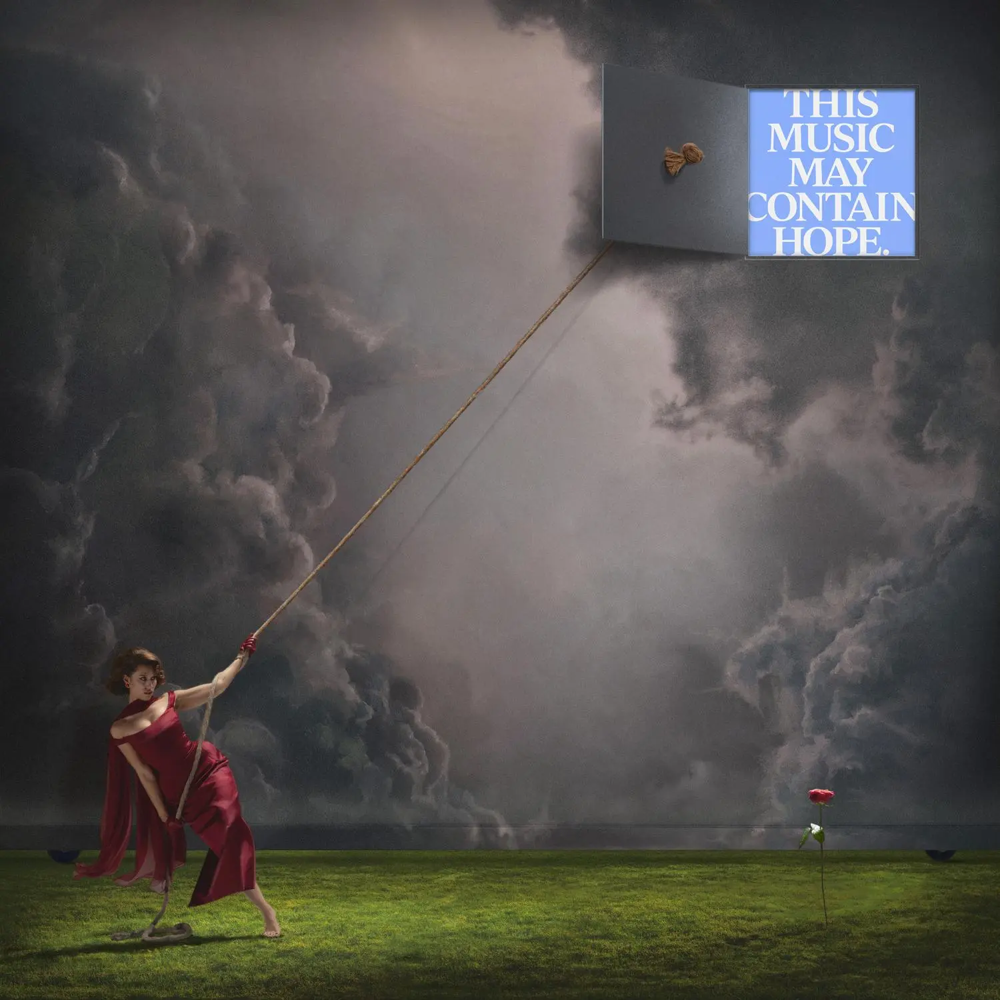

Album#34
THIS MUSIC MAY CONTAIN HOPE.
{kind=link}

专辑信息
- 专辑名称： THIS MUSIC MAY CONTAIN HOPE.
- 歌手： RAYE
- 年份： 2026-03-27
- 风格： Jazz, Big band, Soul, Neo-Soul, Blues, Orchestral Pop
- 时长： 73:30

This Music May Contain Hope 是英国歌手 RAYE 的第二张录音室专辑。专辑的音乐风格很丰富，可以听到 Soul、R&B、HipHop、电子乐、音乐剧等元素，里面的弦乐和管乐都很好听，RAYE 的声音富有感染力，蛮耐听的一张专辑。
专辑按每 4 首（最后一个部分是 5 首）分成了秋冬春夏 4 个季节，讲述了 RAYE 情感上的失意、不堪重负，但在期间也有人给予她安慰，她也告诉自己艰难的日子终究会过去的。整张专辑就像是一个疗伤的过程，RAYE 慢慢从深渊里走出来，和过去告别，重新爱上自己，变得更加自信和坚强。
专辑名是 THIS MUSIC MAY CONTAIN HOPE. ，听完之后确实能收获到一些 Hope，例如 I Will Overcome 对自己说「我能够克服过去的」；Click Clack Symphony 唱到「The cold never lasts, my darling / It just teaches the heart how to burn」; I Know You're Hurting 告诉那些深陷悲伤和绝望的人，我知道你的悲伤，我会在边上一直陪着你；Life Boat 不断对自己重复「I'm not giving up yet」；Happier Times Ahead 描绘了几个悲伤的场景，但告诉人们要找点信念坚持下去，相信坚持过去后就会迎来快乐。
专辑也反映了 RAYE 的宗教信仰，歌词涉及很多圣经的内容，依靠宗教信仰，让 RAYE 在苦难中找到了喜乐和平静。
专辑封面上，RAYE 穿着红色的礼服，抓着绳子，用力地拽着，将乌云扯开了一个口子，乌云背后是蓝天，写着专辑名称「THIS MUSIC MAY CONTAIN HOPE.」。专辑里有大片的乌云，从乌云的光线上看，太阳就在乌云背后，乌云很厚重，就像是那些压在自己身上，让人喘不过气的事情和情绪。一道光从撕开的口子洒在 RAYE 的身上，撒在草坪上，大概象征着希望吧。用力拽这个动作，也表达出了困境是需要付出许多努力才能战胜的。
RAYE 的声音是很有感染力的，这大概就是 Soul 音乐的特点吧，之前分享过的 Lauryn Hill 的 The Miseducation of Lauryn Hill 也给我同样感受。 RAYE 的声音和唱法，也会让我想到 Olivia Dean，推荐听听她的 Live At The Jazz Cafe。
TRACKLIST
- Intro: Girl Under The Grey Cloud.
- I Will Overcome.
- Beware The South London Lover Boy.
- The WhatsApp Shakespeare.
- Winter Woman.
- Click Clack Symphony.
- I Know You’re Hurting.
- Life Boat.
- I Hate The Way I Look Today.
- Goodbye Henry.
- Nightingale Lane.
- Skin & Bones.
- WHERE IS MY HUSBAND!
- Fields.
- Joy.
- Happier Times Ahead.
- Fin.
Intro: Girl Under The Grey Cloud.
歌词
[Verse: RAYE, Gramma]
Allow me to set the scene
Our story begins at 2:27 a.m. on a rainy night in Paris, cue the thunder
Autumn leaves blanket the concrete, the sky is dark
A woman in her late twenties walks from a bar to her hotel
She has no umbrella, she is seven Negronis deep
And she nurses a hole she is desperately trying to fill
Her eyebrows were plucked, she worе fake eyelashеs and a red dress
Yet no one at the bar would notice her efforts
Though disappointed, she is no stranger to rejection
She has weathered many storms, that she herself has become the girl under the grey cloud
As she was walking alone in the rain, chin to her chest
Arms wrapped around her waist, a perfect storm was brewing
This night in November would prove to be the catalyst, a culmination, the perfect recipe
For the girl under the grey cloud must finally make way for the rain
Ingredients as follows:
Her loneliness, the vermouth
The scratching of the zip on the left hem of her dress
The echo of a belittling assessment she had received from a man earlier that day
And a voice note from her grandma that would say
Call me, please, we need to pray
歌词大意
请允许我铺设背景
我们的故事开始于凌晨 2:27，一个巴黎的雨夜，雷声渐起
秋叶覆盖着混凝土，天空一片漆黑
一名二十多岁的女子从酒吧步行回旅馆
她没带伞，刚喝了七杯内格罗尼
她正抚慰着一个她拼命想要填满的空洞
她修过眉毛，戴着假睫毛，穿着红裙子
然而酒吧里没人注意到她的打扮
尽管失望，但她对拒绝并不陌生
她历经了许多风暴，以至于她自己也成了乌云下的女孩
当她独自走在雨中，下巴抵着胸口
双臂环绕着腰部，一场完美的风暴正在酝酿
十一月的这个夜晚将被证明是催化剂，是巅峰，是完美的配方
因为乌云下的女孩最终必须给雨水让路
配料如下：
她的孤独，苦艾酒
她裙子左侧下摆拉链的摩擦声
那天早些时候她从一个男人那里收到的贬低性评价的回响
以及她奶奶发来的一条语音：
给我打个电话，求你了，我们需要祈祷
奶奶的声音听起来像是从天空里传下来的。
I Will Overcome.
歌词
[Intro]
I'll overcome (She will, she will, she will, ooh)
I'll overcome (Yes, indeed, yes, indeed, yes, indeed, she will)
There's a thin grey veil over her horizon
The wall between hope and despair
She exists behind it
She will overcome
[Verse 1]
Five hundred steps left to make it to the front door (Mm)
My red high heels click, click, four many too drinks
I feel my backbone threaten to greet the concrete below
I mean, who wants to bе in Paris drunk and alone?
Where thе phantom of a past love lingers in the cracks of
The cobblestones that I march on and it haunts me, and it taunts me
And su-su-su-suddenly, in a reflection of a Chanel boutique window
I can see the old me and I hate her
I feel syrup strands of blue moonlight pour through the clouds
To find me out like a spotlight, as if Heaven's watching down
To illustrate briefly the state of my mind
I have black cat-eye glasses, so I look chic as I cry
And it's funny, some people say I remind them of Amy
Some spit through their keyboards, I'll never amount
And the evil in insults, the arrows from your tongue
Is the same devils you tortured her with
Anyhow, I
[Chorus]
I'll overcome (She will, she will, she will)
I'll overcome (Yes, indeed, yes, indeed, yes, indeed)
When this wicked world wants to whisper
"You cannot, you won't be, you will not
So go home and shut up, and go sleep"
This is a song to remind me, since I needed one
I will overcome
[Post-Chorus]
There's a thin grey veil over her horizon
The wall between hope and despair (Yes, I will, yes, I will, yes, I will, yes, I will)
She exists behind it
She will overcome
Yeah, yeah, yeah, yeah, yes, I will, oh
[Verse 2]
Five hundred steps back and I was doing so well (So well)
Whilst scrolling, I sighed (I'm so jealous)
Of everyone online who is so much happier
And content and complete (To feel better, I shall arrange a sad little feast)
Where I will jump up and down on my bed in my grief
And I'll play Edith Piaf, and I'll dance and I'll
Eat chocolate cake and I'll have no regrets till I
Wake up and hate me now, I must know, anyhow
I will keep on
[Chorus]
I'll overcome (She will, she will, she will)
I'll overcome (Yes, indeed, yes, indeed, yes, indeed)
When this wicked world wants to whisper
"You cannot, you won't be, you will not
So go home and shut up, and go sleep"
This is a song to remind me, since I needed one
[Bridge]
Five hundred steps left, maybe I have lost count
My battery died, so I'm not sure if I turn left or turn right
As my eyes gathered tears, it's as if it was staged
How all the night skies above start to thunder and rain
Like a Hollywood movie with some sad exceptions
No lover to kiss, or promised happy endings
I'll swing 'round this street lamp, and I'll give you a story
You may say I look crazy, but I won't even care
Aren't we all broken people? Just perfect how to hide it
And life's guarantee's that we're all going to die
So am I going to live like this all of my life?
I'm not okay right now
But I'll get there somehow, I
[Chorus]
I'll overcome, I-I-I, I-I
I'll overcome (She will, she will)
When this wicked world wants to whisper
"You cannot, you won't be, you will not
So go home and shut up, and go sleep"
This is my song to remind me, I needed one
I will overcome, oh, oh, oh
[Outro]
There's a thin grey veil over her horizon
And it is the wall between hope and despair
She exists behind it, she will overcome
歌词大意
[前奏]
我会战胜这一切（她会，她会，她会，哦）
我会战胜这一切（是的，的确，是的，的确，是的，的确，她会）
她的地平线上笼罩着一层薄薄的灰色面纱
那是希望与绝望之间的墙
她就生存其后
她会战胜这一切
[主歌 1]
离家门口还剩五百步（嗯）
我的红色高跟鞋咯吱咯吱响，喝了太多酒
我感到我的脊梁骨正威胁着要与下方的水泥地打招呼
我是说，谁想在巴黎喝得烂醉又孤身一人？
旧爱的幽灵在裂缝中徘徊
在我行进的鹅卵石路上，它纠缠着我，嘲弄着我
突-突-突-突然间，在香奈儿精品店橱窗的倒影里
我看到了旧日的自己，我恨她
我感到蓝色月光的糖浆丝穿过云层
像聚光灯一样搜寻我，仿佛上天在俯视
为了简述我的心境
我戴着黑色的猫眼眼镜，这样我哭的时候看起来也很时尚
真有意思，有人说我让他们想起了艾米
有人在键盘上吐沫星子，说我永远不会有成就
而那些侮辱中的恶意，你舌尖射出的利箭
正是你们曾用来折磨她的那些恶魔
无论如何，我
[副歌]
我会战胜这一切（她会，她会，她会）
我会战胜这一切（是的，的确，是的，的确，是的，的确）
当这个邪恶的世界想要低语：
“你不能，你不会成为，你将不会
所以回家闭嘴，去睡觉吧”
这是一首提醒我的歌，因为我需要它
我会战胜这一切
[后副歌]
她的地平线上笼罩着一层薄薄的灰色面纱
希望与绝望之间的墙（是的，我会，是的，我会，是的，我会，是的，我会）
她就生存其后
她会战胜这一切
耶，耶，耶，耶，是的，我会，哦
[主歌 2]
退后五百步，我曾做得很好（很好）
滑着手机，我叹了口气（我真嫉妒）
嫉妒网上的每一个人都比我快乐得多
那么满足，那么完整（为了感觉好点，我要安排一场悲伤的小盛宴）
我会悲伤地在床上跳来跳去
我会放着 Edith Piaf 的歌，我会跳舞，我会
吃巧克力蛋糕，我不会后悔，直到
我醒来并恨现在的我，无论如何，我必须知道
我会继续
[副歌]
我会战胜这一切（她会，她会，她会）
我会战胜这一切（是的，的确，是的，的确，是的，的确）
当这个邪恶的世界想要低语：
“你不能，你不会成为，你将不会
所以回家闭嘴，去睡觉吧”
这是一首提醒我的歌，因为我需要它
[桥接]
还剩五百步，也许我数错了
手机没电了，所以我不确定该左转还是右转
当我的眼中蓄满泪水，这一切仿佛是排练好的
头顶所有的夜空如何开始电闪雷鸣，风雨大作
就像一部好莱坞电影，除了一些悲惨的例外
没有爱人亲吻，也没有承诺的幸福结局
我会绕着这根路灯旋转，我会给你们讲个故事
你可以说我看起来疯了，但我根本不在乎
我们不都是破碎的人吗？只是完美地学会了如何隐藏
生命的保证就是我们都会死去
难道我要一辈子都这样生活吗？
我现在状态不好
但我总会走出来的，我
[副歌]
我会战胜这一切，我，我，我，我
我会战胜这一切（她会，她会）
当这个邪恶的世界想要低语：
“你不能，你不会成为，你将不会
所以回家闭嘴，去睡觉吧”
这是我的歌，用来提醒我，我需要它
我会战胜这一切，哦，哦，哦
[尾声]
她的地平线上笼罩着一层薄薄的灰色面纱
那是希望与绝望之间的墙
她就生存其后，她会战胜这一切
一个受伤的人，不断告诉自己可以挺过去。
和 Intro 无缝衔接，交响乐很恢弘，像是那层厚重的乌云。
Beware The South London Lover Boy.
歌词
[Intro]
Deep in the heart of the South London concrete jungle
There lives a strange creature
Beware, the South London lover boy (Ha-ha-ha-ha, ha-ha-ha-ha; Ah)
[Chorus]
Girls, stay safe out there
Best you stay prepared
He's a South London lover boy
[Post-Chorus]
(Oh, uh-uh-uh, uh, uh, uh) Beware
(Oh, uh-uh-uh, uh, uh, uh) And be wary
(Oh, uh-uh-uh, uh-uh, uh-uh) It's, so, so scary
(Uh-uh, uh-uh)
[Verse 1]
He'll Lime Bike to your doorstep (Ooh)
Spliff hangin' off his lips (Ooh)
He'll grab your arse and squeeze it (Ooh)
Before he leans in for a kiss (Uh-uh, uh-uh)
He's just so charismatic (Uh-uh-uh, uh, uh, uh)
And he talks as if he's doing road (Uh-uh-uh, uh, uh, uh)
And he says, "I'm too toxic for you, darling" (Uh-uh-uh, uh, uh, uh),
"But when we kiss, it feels like home" (Uh-uh, uh-uh)
[Pre-Chorus]
Beware (Won't you beware?)
The South London lover boy (The South London lover boy)
They'll know where to find you (They'll know where to find you)
Especially early when you're home alone too
Beware (Beware, beware)
He'll pull up on you in an all-black car
And start reading poems out the window
He's not looking for a heart, just your pillow to rest his head
See RAYE Live
Get tickets as low as $128
You might also like
The WhatsApp Shakespeare.
RAYE
I Will Overcome.
RAYE
Winter Woman.
RAYE
[Chorus]
Girls, stay safe out there
Best you stay prepared
He's a South London lover boy
[Post-Chorus]
(Oh, uh-uh-uh, uh, uh, uh) Beware
(Oh, uh-uh-uh, uh, uh, uh) He's so aimless
(Oh, uh-uh-uh, uh-uh, uh-uh) It's, so, so dangerous
[Verse 2]
Well, there's another side to this story (Ooh)
For there's a mean kinda beast a lurking (Ooh)
And it hunts these streets, and it may call you by a whistle (Ooh)
If it finds you, pretty woman, the first thing, uh (Tuh-tuh-tuh)
Take care not to antagonise it
Do-don't offend its fragile ego
Stay calm and kind and polite, oh, darling
Or else the outcome could be lethal
[Pre-Chorus]
Beware, eh-eh-eh-yeah (Won't you beware?)
The South London lover boy (The South London lover boy)
They'll know where to find you (They'll know where to find you)
Especially early when you're home alone too
Beware (Beware, beware)
He'll pull up on you in an all-black car
And start reading you poems out the window
He's not looking for a heart, just your pillow to rest his head
[Chorus]
Girls, stay safe out there (There)
Best you stay prepared (Ooh)
He's a South London lover boy
[Bridge]
Alright, girls (It's so, so, so scary)
Wherever you're listening
In your house, in your car (And so, so, beware)
Walking home from work after dark (It's so, so, so scary)
I need you to repeat after me
Stay wary, girls, it's scary out there, sing (Uh, uh, girls)
[Outro]
Girls, stay safe out there, sing (Girls)
Girls, stay safe out there, sing (Sing, girls)
Best to stay prepared, sing
Best to stay prepared, sing (It's wild out there, sing)
Girls, stay safe out there, sing
Girls, stay safe out there, sing
It's best to stay prepared
Uh-uh-uh, we think she needs the drums
Girls, stay safe out there
Girls, stay safe out there
Best to stay prepared
Best to stay prepared
Oh, girls, stay safe out there
Girls, stay safe out there
Best to stay prepared
Best to stay prepared (Oh)
He's not looking for your heart, just a pillow to rest his head
Ooh, that boy is a South London lover boy
Yeah, yeah, yeah, yeah
歌词大意
[前奏]
在南伦敦水泥丛林的核心深处
住着一个奇怪的生物
小心，那个南伦敦花心男 (哈-哈-哈-哈，哈-哈-哈-哈；啊)
[副歌]
女孩们，在外面要保持安全
最好做好准备
他是个南伦敦花心男
[副歌后]
(哦，唔-唔-唔，唔，唔，唔) 小心
(哦，唔-唔-唔，唔，唔，唔) 并且要警惕
(哦，唔-唔-唔，唔-唔，唔-唔) 这真的，非常，非常恐怖
(唔-唔，唔-唔)
[第一段]
他会骑着 Lime 共享单车到你门口 (哦)
嘴唇上挂着大麻烟 (哦)
他会一把抓住你的屁股用力捏 (哦)
然后凑过来亲吻 (唔-唔，唔-唔)
他就是这么有魅力 (唔-唔-唔，唔，唔，唔)
说话的样子像是在混道上 (唔-唔-唔，唔，唔，唔)
他说，“亲爱的，我对你来说太毒了” (唔-唔-唔，唔，唔，唔)，
“但当我们接吻时，感觉就像回到了家” (唔-唔，唔-唔)
[前副歌]
小心 (你难道不该小心吗？)
那个南伦敦花心男 (那个南伦敦花心男)
他们知道去哪里找你 (他们知道去哪里找你)
尤其是当你清晨独自在家的时候
小心 (小心，小心)
他会开着一辆全黑的车停在你面前
开始对着窗外读诗
他找的不是真心，只是想找个枕头靠靠头
[副歌]
女孩们，在外面要保持安全
最好做好准备
他是个南伦敦花心男
[副歌后]
(哦，唔-唔-唔，唔，唔，唔) 小心
(哦，唔-唔-唔，唔，唔，唔) 他如此漫无目的
(哦，唔-唔-唔，唔-唔，唔-唔) 这真的，非常，非常危险
[第二段]
好吧，这个故事还有另一面 (哦)
因为有一种凶狠的野兽在潜伏 (哦)
它在这些街道上狩猎，可能会通过口哨呼唤你 (哦)
如果它找到了你，漂亮的女人，第一件事，额 (呸-呸-呸)
注意不要激怒它
千万别冒犯它那脆弱的自尊心
保持冷静、善良和礼貌，哦，亲爱的
否则后果可能是致命的
[前副歌]
小心，诶-诶-诶-耶 (你难道不该小心吗？)
那个南伦敦花心男 (那个南伦敦花心男)
他们知道去哪里找你 (他们知道去哪里找你)
尤其是当你清晨独自在家的时候
小心 (小心，小心)
他会开着一辆全黑的车停在你面前
开始对着窗外读诗
他找的不是真心，只是想找个枕头靠靠头
[副歌]
女孩们，在外面要保持安全 (在那儿)
最好做好准备 (哦)
他是个南伦敦花心男
[桥接]
好了，女孩们 (这真的，非常，非常恐怖)
无论你在哪里收听
在家里，在车里 (所以，所以，要小心)
天黑后下班回家的路上 (这真的，非常，非常恐怖)
我需要你们跟我重复
保持警惕，女孩们，外面很恐怖，唱 (唔，唔，女孩们)
[尾声]
女孩们，在外面要保持安全，唱 (女孩们)
女孩们，在外面要保持安全，唱 (唱吧，女孩们)
最好做好准备，唱
最好做好准备，唱 (外面很疯狂，唱吧)
女孩们，在外面要保持安全，唱
女孩们，在外面要保持安全，唱
最好做好准备
唔-唔-唔，我们觉得她需要鼓点
女孩们，在外面要保持安全
女孩们，在外面要保持安全
最好做好准备
最好做好准备
哦，女孩们，在外面要保持安全
女孩们，在外面要保持安全
最好做好准备
最好做好准备 (哦)
他找的不是你的真心，只是想找个枕头靠靠头
哦，那个男孩是个南伦敦花心男
耶，耶，耶，耶
节奏欢快的一首，「小心那个南伦敦花心男」，大概就是被这样的男人欺骗了感情吧。像是一首音乐剧的曲目。
The WhatsApp Shakespeare.
歌词
[Part I]
[Verse 1]
Once upon a time there was a (Girl)
Girl, and there was a serpent (Serpent)
Oh, and her name was Eve (Eve)
And she took a bite from the apple (Apple)
And the story ain't this dissimilar (Yeah)
Many, many, many, many moons later
She'd be deceived by her very own traitor
And he weren't even my type on paper
Such sweet poetry he would write
"The WhatsApp Shakespearе Killer," we call him
Lies just to climb into your bеdroom door
Now you're fighting for your life on your bedroom floor
And, and a devil did send him
Heart of blue, black venom
My mother knew when she met him
Wolf in sheep's clothes, oh, but in this case, denim
Uh, cold-blood felon
[Pre-Chorus]
Oh, how Mother would then mourn the ghost of her daughter
As he lured me in like a lamb to the slaughter
Yeah, yeah, sounds very dramatic, don't it?
A modern-day tragedy, I call it
It's a true story, it happened
[Chorus]
Oh, how he'd romance (Romance) on me, on me, on me
He'd WhatsApp call me, call me with a
"Wherefore art thou1, true love?" (He strikes again)
Oh, he's a cursive kisser
He'd romance on me, on me, on me
Romeo, oh, no, I was a fool to love you, damn
Juliet must run, Juliet must vanish
Damn it, cut him off, savage, he must be banished
The WhatsApp Shakespeare killer
[Verse 2]
I was still breathing, baby, just barely (Barely)2
Grandma had to bring her Bible (Bible)
Sister wanna hunt him down
But only Jesus can save him now
Like-like-like Lazarus, I did rise3
What a miracle she could survive
Last text sent in the dead of the night
When the light in her eyes left with him
Hold sis earrings, go get him
[Pre-Chorus]
Oh, how Mother would then mourn the ghost of her daughter
As he lured me in like a lamb to the slaughter
Yeah, yeah, sounds very dramatic, don't it?
A modern-day tragedy, I call it
Not with thy flesh, but with thy words, he would
[Chorus]
Romance (Romance) on me, on me, on me
He'd WhatsApp call me, call me with a
"Wherefore art thou, true love?" (He strikes again)
Oh, he's a cursive kisser
He'd romance on me, on me, on me
Romeo, oh, no, I was a fool to love you, damn
Juliet must run, Juliet must vanish
Damn it, cut him off, savage, he must be banished
The WhatsApp Shakespeare killer
[Outro]
Run, Juliet, run, Juliet, run
Silence all notifications
Forward this text to at least ten people, please
Thy words I plead from thy tongue
His weapons of mass seduction
My midsummer night nightmare
Don't end up like me
[Segue]
He's still out there, Romeo Fraud
He's a 6'2" sick mother— five months minimum recovery
From a sweet lie to the all-out Shakespearean voice-note-ery
Though I'd like to clarify
No one did die in the story
But I did inside when I found out
[Part II]
[Intro]
I was one of seven other leading ladies
Starring in the new romantic thriller
[Verse]
Presenting the WhatsApp Shakespeare Killer
Ooh, he's a cursive kisser (Romeo Fraud)
He'd WhatsApp call me (Call me, call me with the, wow), mm-mhm
"Wherefore (Ooh) art thou (Mm), true love?" (Na-na-na-na-na, na-na-na-na-na) Oh (Ba-bum, ba-bum, dum)
[Bridge]
He would romance
Where once I lived in the palm of his hand
And at the time, how could I understand?
Why now, I ask you to forward this message or face seven months' sadness
[Outro]
You better run
Stick it to the man
You better run while you can
Fact, your Uber's outside
Must learn the art of airtime
You never must reply
You must escape the clutches of this fake Prince Charming
A.k.a. the WhatsApp Shakespeare, darling, dun-dun, dun-dun-dun
歌词大意
[第一部分]
[主歌 1]
很久很久以前，有一个（女孩）
女孩，还有一条蛇（蛇）
哦，她的名字叫夏娃（夏娃）
她咬了一口苹果（苹果）
故事并没有那么不同（耶）
很多很多年以后
她会被她自己的叛徒欺骗
而他在纸面上甚至不是我喜欢的类型
他会写下如此甜蜜的诗句
我们称他为“WhatsApp 莎士比亚杀手”
撒谎只是为了爬进你的卧室门
现在你在卧室地板上为生命而战
而且，而且是魔鬼派他来的
忧郁之心，黑色的毒液
我妈妈见到他时就知道了
披着羊皮的狼，哦，但在这种情况下，是牛仔布
呃，冷血重罪犯
[导歌]
哦，母亲会如何哀悼女儿的幽灵
因为他诱导我，就像把羊羔送进屠宰场
耶，耶，听起来很有戏剧性，不是吗？
我称之为现代悲剧
这是一个真实的故事，它发生了
[副歌]
哦，他是如何对我浪漫（浪漫）的
他会给我打 WhatsApp 电话，带着
“汝在何处，真爱？”（他又出击了）
哦，他是个草率的亲吻者
他会对我浪漫，对我，对我
罗密欧，哦，不，我真是个傻瓜才会爱你，该死
朱丽叶必须跑，朱丽叶必须消失
该死的，甩掉他，野蛮点，他必须被放逐
WhatsApp 莎士比亚杀手
[主歌 2]
我还在呼吸，宝贝，只是勉强（勉强）
奶奶不得不带来她的圣经（圣经）
姐姐想追捕他
但现在只有耶稣能救他了
就像-就像-就像拉撒路一样，我确实复活了
真是个奇迹，她竟然能活下来
最后一条短信是在深夜发出的
当她眼中的光随他而去
拿着姐姐的耳环，去抓他
[导歌]
哦，母亲会如何哀悼女儿的幽灵
因为他诱导我，就像把羊羔送进屠宰场
耶，耶，听起来很有戏剧性，不是吗？
我称之为现代悲剧
不是用你的肉体，而是用你的言语，他会
[副歌]
浪漫（浪漫）对我，对我，对我
他会给我打 WhatsApp 电话，带着
“汝在何处，真爱？”（他又出击了）
哦，他是个草率的亲吻者
他会对我浪漫，对我，对我
罗密欧，哦，不，我真是个傻瓜才会爱你，该死
朱丽叶必须跑，朱丽叶必须消失
该死的，甩掉他，野蛮点，他必须被放逐
WhatsApp 莎士比亚杀手
[尾声]
跑吧，朱丽叶，跑吧，朱丽叶，跑
静音所有通知
请将此短信转发给至少十个人
我从你的舌尖恳求你的言语
他的大规模诱惑武器
我的仲夏夜噩梦
别落得像我一样的下场
[衔接]
他还在外面，罗密欧骗子
他是个 6 英尺 2 英寸的变态混蛋——最少需要五个月的恢复期
从一个甜蜜的谎言到彻头彻尾的莎士比亚式语音留言
虽然我想澄清一下
故事里没有人死掉
但当我发现真相时，我的内心死去了
[第二部分]
[前奏]
我是其他七位女主角之一
主演这部新的浪漫惊悚片
[主歌]
呈现：WhatsApp 莎士比亚杀手
哦，他是个草率的亲吻者（罗密欧骗子）
他会给我打 WhatsApp 电话（给我打，给我打，带着，哇），嗯-哼
“汝在何处（哦）汝（嗯），真爱？”（呐-呐-呐-呐-呐，呐-呐-呐-呐-呐）哦（砰-砰，砰-砰，当）
[桥接]
他会制造浪漫
曾经我住在他的手心里
而那时，我怎么能理解？
为什么现在，我要求你转发这条消息，否则将面临七个月的悲伤
[尾声]
你最好快跑
反抗那个男人
趁你还能跑的时候快跑
事实是，你的 Uber 在外面
必须学会不回消息的艺术
你绝不能回复
你必须逃离这个伪白马王子的魔掌
又名 WhatsApp 莎士比亚，亲爱的，当-当，当-当-当
喜欢 RAYE 的一些发音，例如 venom、denim、kisser，喜欢副歌。
歌曲的后半段听着像是一段百老汇风格的音乐，会让我想到爱乐之城的配乐。
Winter Woman.
歌词
[Verse 1]
Picture me, I am a silhouette ('Uette—)
I am a sob story, standing in the rain in a summer dress
Only so much the heart can take (Take—)
I thought he had plans to love me
But it seems I made a grave mistake
Watching them from far away
He wrapped his arms, I'd die to live inside
Around her perfect, little, tiny waist
A sucker punch into my chest
I'll see myself out, I'm going home
To cry in private by Uber Exec
[Pre-Chorus]
Don't call me, you can send a text
And pull up at this petrol station, please
So I can buy a pack of cigarеttes
Crying in a stranger's car
Have fun with Alicе at the bar
Maybe I'll become the Queen of Hearts4
[Chorus]
Cold girls get by, cold girls won't cry
I'll become the winter woman
I'll wear floor-length fake fur coats
In the middle of July, baby
I'll be sad and beautiful
I will be sad and beautiful
And I'll wait and pray for warmer days to come
Until then, I'm numb and
[Verse 2]
Life goes on, life goes on
She gets her money, then a taxi home
She hunt alone, hurts alone
In her castle on the hill where no one comes or no one goes
Yeah, and her heart is blue, dress is red
Your text is green and left on read
Yeah, just like roses, violets are blue
Regret is a bitch, I have a feeling
You'll be meeting her soon
Picture me, I am a silhouette
I am a sob story, standing in the rain in a summer dress
I know I won't be sad forever
Tonight, I kissed a bottle on the lips
'Cause desperate times require desperate pleasure
[Pre-Chorus]
I don't need another friend
Pull up at this petrol station, please
So I can buy a large bottle of gin
Crying in a stranger's car
Have fun with Alice at the bar
Baby, I'll become the Queen of Hearts
[Chorus]
Cold girls get by, cold girls won't cry
I'll become the winter woman
I'll wear floor-length fake fur coats
In the middle of July (Baby)
I'll be sad and beautiful (Baby)
I will be sad and beautiful
And I'll wait and pray for warmer days to come
(Now he must watch her now walk)
[Verse 3]
Now watch her walk in slow motion, watch her walking away
Her hair will dance in the wind, she'll be the girl you wish you had
Give me a night to cry my heart out, and a day to re-brand
As I remind myself, I am the girl I think that I am
She keep it pushing, sadness suppression
She hides her scars under silk presses and crimson dresses
No more paragraph confessions (Yes), she learned her lessons (Yes)
An arctic breeze blows from the west
She vows an oath to make her name a word you won't forget
Until, then
[Interlude]
Life goes on (And then)
Life, life goes on
There'll be no more paragraph confessions
She vows an oath to make her name a word you won't forget
[Bridge]
Picture me, I am a silhouette ('Uette—)
I am a sob story, standing in the rain in a summer dress
Only so much the heart can take (Take—)
I thought he had plans to love me
But it seems I made a grave mistake
Watching them from far away
He wraps his arms, I'd die to live inside
Around her perfect, little, tiny waist
A sucker punch into my chest
Tonight, I kissed a bottle on the lips
Since desperate times require desperate pleasures
[Pre-Chorus]
I don't need another friend
Pull up at this petrol station, please
So I can buy a pack of cigarettes
Crying in a stranger's car
Have fun with Alice at the bar
As I become the Queen of Hearts
[Chorus]
Cold girls get by, cold girls won't cry
I'll become the winter woman
And I'll wear floor-length fake fur coats
In the middle of July (Baby)
I'll be sad and beautiful (Baby)
I will be sad and beautiful
And I'll wait and pray for warmer days to come
Until then, I know that
[Outro]
Life goes on
Life goes on
She gets her money, then a—
Life, life, go, go, on, on, on, on
On and on, and on, and on
Life goes on
Life goes on
She gets her money, then a taxi home
Life goes on
歌词大意
[Verse 1]
想象一下我，我只是一个剪影 ('Uette—)
我是一个悲惨的故事，穿着夏装站在雨中
心能承受的也就这么多 (Take—)
我以为他计划着要爱我
但看来我犯了一个严重的错误
远远地看着他们
他搂着她的腰，我渴望能住在那里
搂着她那完美、纤细、娇小的腰
就像往我胸口重重打了一拳
我会自己离开，我要回家了
在 Uber Exec 里独自哭泣
[Pre-Chorus]
别给我打电话，你可以发短信
请在这家加油站停下
好让我买包烟
在陌生人的车里哭泣
和 Alice 在酒吧玩得开心点吧
也许我会成为红心皇后
[Chorus]
冷酷的女孩能挺过去，冷酷的女孩不会哭泣
我会成为冬日女人
我会穿着拖地的人造毛皮大衣
在七月盛夏，宝贝
我会忧郁而美丽
我会忧郁而美丽
我会等待并祈祷温暖的日子到来
在那之前，我已麻木
[Verse 2]
生活在继续，生活在继续
她拿到钱，然后打车回家
她独自狩猎，独自受伤
在她那无人进出的山顶城堡里
是啊，她的心是蓝色的，裙子是红色的
你的短信是绿色的，且显示已读
是啊，就像玫瑰是红的，紫罗兰是蓝的
遗憾是个婊子，我有种感觉
你很快就会遇见她
想象一下我，我只是一个剪影
我是一个悲惨的故事，穿着夏装站在雨中
我知道我不会永远悲伤
今晚，我亲吻了酒瓶的唇
因为绝望的时刻需要绝望的享乐
[Pre-Chorus]
我不需要另一个朋友
请在这家加油站停下
好让我买一大瓶杜松子酒
在陌生人的车里哭泣
和 Alice 在酒吧玩得开心点吧
宝贝，我会成为红心皇后
[Chorus]
冷酷的女孩能挺过去，冷酷的女孩不会哭泣
我会成为冬日女人
我会穿着拖地的人造毛皮大衣
在七月盛夏 (宝贝)
我会忧郁而美丽 (宝贝)
我会忧郁而美丽
我会等待并祈祷温暖的日子到来
(现在他必须看着她走开)
[Verse 3]
现在看她慢动作走着，看她走远
她的头发随风起舞，她会成为你渴望拥有的那个女孩
给我一个夜晚让我痛哭一场，给我一天让我重塑形象
当我提醒自己，我就是我所认为的那个女孩
她继续前行，压抑着悲伤
她在丝滑的发型和深红色的裙子下隐藏伤疤
不再有长篇大论的告白 (是的)，她吸取了教训 (是的)
北极寒风从西方吹来
她立下誓言，要让她的名字成为你无法忘怀的词
直到那时
[Interlude]
生活在继续 (然后)
生活，生活在继续
不再有长篇大论的告白
她立下誓言，要让她的名字成为你无法忘怀的词
[Bridge]
想象一下我，我只是一个剪影 ('Uette—)
我是一个悲惨的故事，穿着夏装站在雨中
心能承受的也就这么多 (Take—)
我以为他计划着要爱我
但看来我犯了一个严重的错误
远远地看着他们
他搂着她的腰，我渴望能住在那里
搂着她那完美、纤细、娇小的腰
就像往我胸口重重打了一拳
今晚，我亲吻了酒瓶的唇
因为绝望的时刻需要绝望的享乐
[Pre-Chorus]
我不需要另一个朋友
请在这家加油站停下
好让我买包烟
在陌生人的车里哭泣
和 Alice 在酒吧玩得开心点吧
当我成为红心皇后
[Chorus]
冷酷的女孩能挺过去，冷酷的女孩不会哭泣
我会成为冬日女人
我会穿着拖地的人造毛皮大衣
在七月盛夏 (宝贝)
我会忧郁而美丽 (宝贝)
我会忧郁而美丽
我会等待并祈祷温暖的日子到来
在那之前，我知道
[Outro]
生活在继续
生活在继续
她拿到钱，然后一个—
生活，生活，继续，继续，一直，一直
没完没了，没完没了
生活在继续
生活在继续
她拿到钱，然后打车回家
生活在继续
开头轻轻唱，然后低音鼓点慢慢加强，喜欢这段编曲。
当唱到「An arctic breeze blows from the west」（北极寒风从西方吹来），有一段旋律很经典的弦乐，急促地提琴声就像是凛冽的北极寒风。
歌词内容让我想到了 重庆森林 里的林青霞。
Click Clack Symphony.
歌词
[Intro]
Did you know the odds to be born on this Earth's one in four hundred trillion?
I conquered those odds, yet I can't conquer leaving this house
I eat, sleep, scroll, and work, but there has to be more than just merely existing
In fact, I was thinking there's not enough wine in the fridge to unleash me
And this feeling fiends for some feminine healing5
By that, I mean
[Pre-Chorus]
I call my girls and said, "SOS, pick a dress
Pick a time and an address
For we are going out tonight"
[Chorus]
Send the call out, send the call out
Calling all my baddest women, it's about to go down
Click-click-click clack symphony, I need that
Click-click-click clack symphony, I love the sound of it
Who let the girls out? I did, I did, darling
She's empowered by the sound of us marching
Her legs are hurting, but her back is still arching
And this sound reminds me that it's going to be alright
[Verse 1]
And I never could have guessed I started my morning in tears
Got a great waterproof mascara I can recommend
I should try my luck in Hollywood and find some auditions
Because the way I fake this smile could pay the mortgage and the rent
I climb into my lonely throne before my TV
I feel alone, I feel like no one really needs me
So thank you, Carly, for having a sixth sense
And for calling to remind me
We don't settle for depression on a Friday night
[Pre-Chorus]
I need a pep talk, I need a hug, I need a dance floor
I got one little life, I need to get out the house more
And really start living it
Heavy is the burdens that are weighing on me
I will lay them down under some pink and blue lights
Call my girls and said, "SOS, pick a dress
Pick a time and an address
For we are going out tonight"
[Chorus]
Send the call out, send the call out
Calling all my baddest women, it's about to go down
Click-click-click clack symphony, I need that
Click-click-click clack symphony, I love the sound of it
Who let the girls out? I did, I did, darling
She's empowered by the sound of us marching
Her legs are hurting, but her back is still arching
And this sound reminds me that it's going to be alright
[Verse 2]
Jim-Jimmy Choo, it's time to open up the closet
It's a sad sight to see Manolo Blahnik gather cobwebs
Why, I'm like an alien in every dress I try
Sigh, let me turn my music louder and pretend it's fine
Everything that's hurt me, left and gave up on me
Am I just the product of everything that was done to me?
Run to me, come to me, someone bring the sun to me
I can see the glimmer of the girl who once believed
[Pre-Chorus]
(She just needs, just needs) She needs a pep talk
She needs a hug, she needs a dance floor
She's got one little life, she needs to get out the house more
And try and start living it
Heavy is the burdens that are weighing on me (Me)
I will lay them down under some pink and blue lights (Pink and blue lights)
Call my girls and said, "SOS, pick a dress
Pick a time and an address
For we are going out tonight"
[Chorus]
Send the call out, send the call out
Calling all my baddest women, it's about to go down
Click-click-click clack symphony, I need that
Click-click-click clack symphony, I love the sound of it
Who let the girls out? I did, I did, darling
She's empowered by the sound of us marching
Her legs are hurting, but her back is still arching
And this sound reminds me that it's going to be alright
[Bridge]
Though this season of her life had been cold, lonely and tough
Though she slipped back into a darkness she had hoped by now to have overcome
She had learned a beautiful lesson
And she kissed her girls goodbye and thanked them for getting her out the house
That maybe everything was going to be alright
And even if only for a moment
Everything is going to be alright
Yeah, it's going to be alright
Going to be alright
[Chorus]
Send the call out, send the call out
Calling all my baddest women, it's about to go down
Click-click-click clack symphony, I need that
Click-click-click clack symphony, I love the sound of it
Who let the girls out? I did, I did, darling
She's empowered by the sound of us marching
Her legs are hurting, but her back is still arching
And this sound reminds me that it's going to be alright
[Outro]
Then she put her headphones in
And there she danced under the weight of her clouds
But for the first time in a long time
She believed that one day, she would again feel the sun
She must be patient
She must have faith in the seeds that are planted beneath the snow
She must hold on and she must let go
She'll be alright, no riding, shining, armoured knight
She will save herself this time
And in fact, tonight she did confirm
The cold never lasts, my darling
It just teaches the heart how to burn
歌词大意
[前奏]
你知道出生在这个地球上的概率是四百万亿分之一吗？
我战胜了那些概率，却无法战胜走出这间房子的恐惧
我吃饭、睡觉、刷手机、工作，但生活不该只是仅仅存在着
事实上，我在想冰箱里的酒是不是不够让我释放自我
这种感觉渴望着一些女性力量的治愈
我的意思是
[前副歌]
我给姐妹们打电话说：“SOS，选条裙子
定个时间和地址
因为我们今晚要出门”
[副歌]
发出号召，发出号召
召唤我所有最飒的姐妹，大戏即将上演
咔哒-咔哒-咔哒-咔嚓交响曲，我需要那个
咔哒-咔哒-咔哒-咔嚓交响曲，我爱那个声音
谁把女孩们放出来了？是我，是我，亲爱的
我们行进的声音赋予她力量
她的腿很痛，但她的背依然挺拔
这个声音提醒我，一切都会好起来的
[主歌 1]
我从未想到过我的早晨是在泪水中开始的
我有一款非常棒的防水睫毛膏可以推荐
我应该去好莱坞试试运气，找些试镜机会
因为我伪装笑容的样子足以支付抵押贷款和房租
我爬上电视机前孤独的宝座
我感到孤单，觉得没有人真正需要我
所以谢谢你，卡莉，谢谢你的第六感
谢谢你打电话提醒我
我们不会在周五晚上向抑郁妥协
[前副歌]
我需要一番鼓励，我需要一个拥抱，我需要一个舞池
我只有一次短暂的人生，我需要多走出家门
并真正开始生活
沉重的负担正压在我身上
我会把它们卸在粉蓝色的灯光下
给姐妹们打电话说：“SOS，选条裙子
定个时间和地址
因为我们今晚要出门”
[副歌]
发出号召，发出号召
召唤我所有最飒的姐妹，大戏即将上演
咔哒-咔哒-咔哒-咔嚓交响曲，我需要那个
咔哒-咔哒-咔哒-咔嚓交响曲，我爱那个声音
谁把女孩们放出来了？是我，是我，亲爱的
我们行进的声音赋予她力量
她的腿很痛，但她的背依然挺拔
这个声音提醒我，一切都会好起来的
[主歌 2]
Jim-Jimmy Choo，是时候打开衣橱了
看到 Manolo Blahnik 蒙上蛛网真是悲哀
为什么，我穿上每件裙子都像个外星人
唉，让我把音乐开大点，假装一切都好
所有伤害过我、离开我、放弃我的一切
我难道只是所有施加于我之事后的产物吗？
奔向我，来到我身边，谁能为我带来阳光
我能看见那个曾经深信不疑的女孩闪烁的光芒
[前副歌]
（她只需要，只需要）她需要一番鼓励
她需要一个拥抱，她需要一个舞池
她只有一次短暂的人生，她需要多走出家门
并试着开始生活
沉重的负担正压在我身上（我）
我会把它们卸在粉蓝色的灯光下（粉蓝色的灯光下）
给姐妹们打电话说：“SOS，选条裙子
定个时间和地址
因为我们今晚要出门”
[副歌]
发出号召，发出号召
召唤我所有最飒的姐妹，大戏即将上演
咔哒-咔哒-咔哒-咔嚓交响曲，我需要那个
咔哒-咔哒-咔哒-咔嚓交响曲，我爱那个声音
谁把女孩们放出来了？是我，是我，亲爱的
我们行进的声音赋予她力量
她的腿很痛，但她的背依然挺拔
这个声音提醒我，一切都会好起来的
[桥段]
尽管她生命的这个阶段曾是寒冷、孤独且艰难的
尽管她又滑回了那片曾希望早已克服的黑暗
但她学会了一个美丽的教训
她吻别了姐妹们，感谢她们带她走出家门
也许一切都会好起来的
哪怕只是在那一瞬间
一切都会好起来的
是的，一切都会好起来的
会好起来的
[副歌]
发出号召，发出号召
召唤我所有最飒的姐妹，大戏即将上演
咔哒-咔哒-咔哒-咔嚓交响曲，我需要那个
咔哒-咔哒-咔哒-咔嚓交响曲，我爱那个声音
谁把女孩们放出来了？是我，是我，亲爱的
我们行进的声音赋予她力量
她的腿很痛，但她的背依然挺拔
这个声音提醒我，一切都会好起来的
[尾声]
然后她戴上耳机
在乌云的重压下翩翩起舞
但这是很长一段时间以来的第一次
她相信总有一天，她会再次感受到阳光
她必须保持耐心
她必须对播种在雪地下的种子有信心
她必须坚持，也必须放手
她会没事的，没有骑着闪耀盔甲的骑士
这一次她会自救
事实上，今晚她确实证实了
寒冷永远不会持久，我亲爱的
它只是在教会心灵如何燃烧
很喜欢一首，尤其是副歌那段「Click-click-click clack」，听着像是踢踏舞的声音。
出门尽情舞蹈，释放自我，跳到腿都痛了，似乎这样能感受到活着的感觉，「Click-click-click clack」又像是强烈跳动着的心脏。
最后的旋律给人的感觉像是冲破了黑暗一般，会让我想到 星际穿越 的配乐，想到那个和空间站对接的场景。这首歌是和 Hans Zimmer 合作的，而 Hans Zimmer 正是星际穿越的作曲家，难怪听着像。 Symphony (交响曲) 一般是由四个乐章构成，最后那个乐章往往是宏大辉煌，以积极光明的情绪结束全曲，这首曲子也是这样。
☞ RAYE - 'Click Clack Symphony.' feat. Hans Zimmer (Official Video)
I Know You’re Hurting.
歌词
[Verse 1]
I can see you're standing on the edge
Your legs step on the ledge of life's afflictions
I know you're a master of disguise, you are
Underneath that soft and gentle smile you put on this morning
You give when you have little left to give
You ballroom dance with hollow "How are you's?" (How are you, how are you?)
Your body aches from marching up your mountains
But you always keep pushing on (Ooh)
You always keep pushing on (You always keep pushing on)
I know life can be a bitch, some call her "Monday"
And I'm thinking of you, dear, I hope you're okay (Yeah)
Maybe there's a hole you're hiding somewhere
And you hide it so well, you do, I must say
[Chorus]
But I, I know you're hurting (Ah-ah-ah)
And deep down there something's burning (Ah-ah-ah, deep down there something's burning)
If you need two more arms to hold these burdens, I am here (Ah-ah-ah)
I said a prayer for you, I hope it's working (Ooh-ooh-ooh)
Please, my dear, don't stop believing in miracles, ooh
[Verse 2]
You always find some kind words for a stranger
I wish that you could find some for yourself, ah-ah
You claw yourself apart in private moments
And over bruises you put plasters on
Where life has dealt another losing hand (Ah)
You bite your tongue and tense your thighs to stand (Ah)
You know that you can't be so strong alone all the time
So please stop trying to be so strong all alone, all alone
You don't have to do this all alone
Even though I know
[Chorus]
Oh, I, I know you're hurting, I know
That deep down there something's burning, I know
If you need two more arms to hold these burdens, I am here (Ah-ah-ah)
I said a prayer for you, I hope it's working
Please, my dear, don't stop believing in miracles, oh-oh-oh-oh
[Interlude]
I know it's hurting (Hurting, hurting)
It's just 6:30 (Just 6:30, 30)
I know it's hurting (It's hurting, hurting)
Pray Lord has mercy (Mercy, mercy)
I know He's working (I know He's working)
Oh (I know He's working)
[Bridge]
I know, I know, I know, I know
I know, I know, I know, I know
I know it's hurting
It's just gone Thursday
Ain't this some damn feeling?
Ain't all of us just looking for some healing?
And while we wait for it
For the sweeter days to find us
Sh-sh-sh-sh-sh-shake off the devils that's lurking
And close your eyes and let this music get to working
[Outro]
If you're listening to this, I need you to hear me now
Don't you give up on your life
Stay with me now
Oh, don't give up on your life
It's gonna be alright, it's gonna be alright
It's gonna be okay (Ah-ah, da-da, da-da, da-da, da-da, ah-ah, ah)
It's gonna be fine, it's gonna be alright
It's gonna be okay, it's gonna be okay
It's gonna be okay, ah
Ah, oh (Da-da, da-da, da-da, da-da, ah-ah, ah)
歌词大意
[Verse 1]
我能看到你正站在边缘
你的双腿踏在生活苦难的岩架上
我知道你是个伪装大师，你确实是
在你今早挂上的那温柔和煦的微笑之下
即使所剩无几你依然在给予
你伴着空洞的“你好吗？”跳着交际舞（你好吗，你好吗？）
你的身体因攀登属于你的大山而酸痛
但你总是一直在坚持（Ooh）
你总是一直在坚持（你总是一直在坚持）
我知道生活有时很操蛋，有人管她叫“周一”
我也在挂念你，亲爱的，我希望你还好 (Yeah)
也许你把某个漏洞藏在了某处
你藏得真好，你确实藏得好，我必须这么说
[Chorus]
但我，我知道你在受伤 (Ah-ah-ah)
在内心深处有什么东西正在灼烧 (Ah-ah-ah, 内心深处有什么东西正在灼烧)
如果你需要多一双手来分担这些重担，我就在这里 (Ah-ah-ah)
我为你祈祷了，我希望它奏效 (Ooh-ooh-ooh)
请，我亲爱的，别停止相信奇迹，ooh
[Verse 2]
你总是能对陌生人说出一些温暖的话
我希望你也能对自己说一些，ah-ah
你在私下的时刻把自己抓得支离破碎
并在淤伤上贴上膏药
在生活发出的又一手烂牌上 (Ah)
你咬紧牙关，紧绷大腿站立 (Ah)
你知道你不能一直独自承受这么强的压力
所以请别再试图独自一人坚强，独自一人
你不需要独自面对这一切
尽管我知道
[Chorus]
哦，我，我知道你在受伤，我知道
内心深处有什么东西正在灼烧，我知道
如果你需要多一双手来分担这些重担，我就在这里 (Ah-ah-ah)
我为你祈祷了，我希望它奏效
请，我亲爱的，别停止相信奇迹，oh-oh-oh-oh
[Interlude]
我知道这很痛 (受伤，受伤)
现在才 6:30 (才 6:30, 30)
我知道这很痛 (这很痛，这很痛)
祈求主怜悯 (怜悯，怜悯)
我知道他在做工 (我知道他在做工)
哦 (我知道他在做工)
[Bridge]
我知道，我知道，我知道，我知道
我知道，我知道，我知道，我知道
我知道这很痛
周四刚过
这不是种该死的感觉吗？
难道我们所有人不都在寻找某种治愈吗？
而当我们等待它
等待更甜美的日子找到我们
甩掉那些潜伏的恶魔
闭上你的眼，让这段音乐开始起效
[Outro]
如果你在听这个，我需要你现在听我说
千万别放弃你的生命
现在和我在一起
哦，别放弃你的生命
一切都会好起来的，一切都会好起来的
一切都会没事的 (Ah-ah, da-da, da-da, da-da, da-da, ah-ah, ah)
一切都会没问题的，一切都会好起来的
一切都会没事的，一切都会没事的
一切都会没事的，ah
Ah, oh (Da-da, da-da, da-da, da-da, ah-ah, ah)
前面轻轻地诉说着，似乎在告诉你「我看到了你，我知道你在独自坚强」，到了副歌，旋律迸发变得强烈，像是一种释放，就像是抱着你，告诉你可以放下一切伪装，告诉你一切都会没事的。
☞ RAYE - I Know You’re Hurting. (Live at Abbey Road Studios)
☞ RAYE - I KNOW YOU'RE HURTING (Live) | Montreux Jazz Festival 2025
Life Boat.
歌词
[Intro]
Don't work too hard, have a rest
And never give up6
Never give up, never (I'm living, not giving up, giving up)
Givin' up yet, I'm not giving up yet, I'm not givin' up yet
Don't know how I'll get there
I'm not givin' up yet, I'm not givin' up yet, I'm not givin' up yet
Say it, say, "I'm not giving up yet"
I'm not giving up yet, I'm not giving up yet
I'm not giving up yet, I'm not giving up yet
He sees you
I'm not giving up yet (Ich geb' jetzt no nik uf7), I'm not giving up yet
[Chorus]
Don't know how I'll get there (I'm not giving up yet)
I'm not giving up yet (I'm not giving up yet)
I'm not givin' up yet
I'm not givin' up yet (I'm not giving up yet)
Don't know how or when, but (I'm not giving up yet)
I'm not giving up, nah
I'm not givin' up, yeah
I'm not givin' up yet
[Post-Chorus]
Criеd myself an ocean
Tryin' not to drown in it
Tryin' not to drown in it
Tryin' not to drown in it (I'm not giving up yet)
Lord, sеnd me a lifeboat
Something I could cling to
Something I could cling to (I'm not giving up yet)
Something I can hold on
[Pre-Chorus]
I don't know how I'm gonna do this
But I know I'm not givin' up
I'm not giving up yet
I'm not giving up yet
I'm not giving up yet
I'm not givin' up yet (I'm not giving up yet)
I'm not giving up yet
I'm not giving up yet (I am not giving up yet)
[Chorus]
Don't know how I'll get there
I'm not givin' up yet
I'm not givin' up yet
I'm not givin' up yet
Don't know how or when, but
I'm not givin' up, nah
I'm not givin' up, said
I'm not givin' up yet (I'm not giving up yet)
[Interlude]
Many people have pains in their lives
They've been so disappointed, so broken
Almost lost the desire to even live
Been rejected many times, I've been disappointed many times
I've been failed many times
Whether you're going through darkness, there is a future
There's a way forward
There's, there's hope
[Chorus]
Don't know how I'll do this (We will make it)
I'm not givin' up (We will make it)
I'm not givin' up (I'm not giving up yet)
(I'm not giving up yet) Don't know how I'll get there
I'm not givin' up (I'm not giving up yet)
I'm not givin' up (I'm not givin' up yet)
[Post-Chorus]
You cried yourself an ocean
Tryin' not to drown in it
Not to drown in it
We might not believe
You might not believe it
But I need you to speak it (Never give up)
Say it like you mean it
[Bridge]
I'm not giving up yet
Say it again
I said I'm not giving up yet
I'm not giving up yet (Woah, woah)
I'm not giving up yet
I'm not giving up yet
He sees you (I'm not giving up yet)
I'm not giving up yet
I'm not giving up yet
This life ain't easy, no (I'm not giving up yet)
I'm not giving up yet
But I'm not givin' up yet (I'm not giving up yet)
Say it (I'm not giving up yet)
Say it (I'm not giving up yet)
Oh, let it go
[Chorus]
Don't know how I'll get there
I'm not givin' up yet
I'm not givin' up yet
I'm not givin' up yet (I'm not giving up yet)
Don't know how or when, but
I'm not givin' up, nah
I'm not givin' up, said (I'm not giving up yet)
I'm not givin' up yet
Don't know how I'll get there
I'm not givin' up yet (I'm not giving up yet)
I'm not givin' up yet
I'm not givin' up yet (I'm not giving up yet)
Don't know how or when, but (I'm not giving up yet)
I'm not givin' up, nah
I'm not givin' up, said (And I'm not giving up yet, neither are you)
I'm not givin' up yet
[Outro]
Oh, Lord, in the Heaven above
I need you to send me a lifeboat, oh
Oh, hey
歌词大意
[前奏]
别太辛苦了，休息一下
永远不要放弃
永远不要放弃，永远不要（我活着，就不放弃，不放弃）
还没放弃，我还没放弃，我还没放弃
不知道我将如何到达那里
我还没放弃，我还没放弃，我还没放弃
说出来，说，“我还没放弃”
我还没放弃，我还没放弃
我还没放弃，我还没放弃
祂看着你
我还没放弃 (Ich geb' jetzt no nik uf)，我还没放弃
[副歌]
不知道我将如何到达那里（我还没放弃）
我还没放弃（我还没放弃）
我还没放弃
我还没放弃（我还没放弃）
不知道如何或何时，但是（我还没放弃）
我不打算放弃，不
我不打算放弃，耶
我还没放弃
[后副歌]
哭出了一片海洋
努力不让自己沉溺其中
努力不让自己沉溺其中
努力不让自己沉溺其中（我还没放弃）
主啊，给我派一艘救生艇
一些我可以紧紧抓住的东西
一些我可以紧紧抓住的东西（我还没放弃）
一些我可以坚持住的东西
[前副歌]
我不知道该怎么做
但我知道我不会放弃
我还没放弃
我还没放弃
我还没放弃
我还没放弃（我还没放弃）
我还没放弃
我还没放弃（我还没放弃）
[副歌]
不知道我将如何到达那里
我还没放弃
我还没放弃
我还没放弃
不知道如何或何时，但是
我不打算放弃，不
我不打算放弃，说
我还没放弃（我还没放弃）
[插曲]
许多人的一生中都有痛苦
他们曾如此失望，如此破碎
甚至几乎失去了生存的欲望
被拒绝过许多次，我曾失望过许多次
我曾失败过许多次
无论你是否正在经历黑暗，都有未来
有一条前进的路
有，有希望
[副歌]
不知道该怎么做（我们会成功的）
我不会放弃（我们会成功的）
我不会放弃（我还没放弃）
（我还没放弃）不知道我将如何到达那里
我不会放弃（我还没放弃）
我不会放弃（我还没放弃）
[后副歌]
你哭出了一片海洋
努力不让自己沉溺其中
不让自己沉溺其中
我们可能不相信
你可能不相信
但我需要你把它说出来（永远不要放弃）
发自内心地说出来
[桥段]
我还没放弃
再说一遍
我说我还没放弃
我还没放弃 (喔，喔)
我还没放弃
我还没放弃
祂看着你（我还没放弃）
我还没放弃
我还没放弃
这生活并不容易，不（我还没放弃）
我还没放弃
但我还没放弃（我还没放弃）
说出来（我还没放弃）
说出来（我还没放弃）
噢，放手吧
[副歌]
不知道我将如何到达那里
我还没放弃
我还没放弃
我还没放弃（我还没放弃）
不知道如何或何时，但是
我不打算放弃，不
我不打算放弃，说（我还没放弃）
我还没放弃
不知道我将如何到达那里
我还没放弃（我还没放弃）
我还没放弃
我还没放弃（我还没放弃）
不知道如何或何时，但是（我还没放弃）
我不打算放弃，不
我不打算放弃，说（我也还没放弃，你也是）
我还没放弃
[尾声]
噢，主啊，在天上的主
我需要你给我派一艘救生艇，噢
噢，嘿
歌曲不断重复着「I'm not giving up yet」，RAYE 还会邀请听众一起说「I'm not giving up yet」，言语是有力量的，对自己说的话也一样，不断重复地告诉自己「I'm not giving up yet」，会让自己在最艰难的时候，依然咬着牙不放弃吧，挺过去，会挺过去的。
这首是电子乐，电子乐强烈的节奏感，会给人带来一种力量感。
I Hate The Way I Look Today.
歌词
[Intro]
This song is called "I Hate The Way I Look Today."
[Verse 1]
I hate the way I look today
I hate the way I look today
I hate the way I look today, so I
Know it seems so sad to say
But today, it's true and it was such a shame
That I looked into the mirror and I cried, mm
I do detest my wicked mind
I must admit, I'm so unkind
To myself, to myself, I'll be so mean
Man, if only I was pretty
I'm okay to be lonely if I'm lonely and skinny
I have such silly self-loathing thoughts, it seems
Da-da-di-di-dun, dun
[Bridge]
Oh, because some girls are so beautiful
(Effortlessly, endlessly, perfectly so)
Today, it's not giving beautiful
It's giving train wreck, it's giving unfortunate
[Verse 2]
See, I hate the way my arms do this
I hate the way my legs do that
But I realise my destructive state of mind
I have to learn to work with it
And accept what I've been given
So maybe I should have a shower and wash my face and give it a try
[Chorus]
Okay, boys (She hates the way she looks tonight)
Okay, boys (She hates the way she looks tonight)
If you hate the way you look tonight, turn it up, yeah (She hates the way she looks tonight, she does)
Da-da-da, da-da-da-da, dum-dum-dum (Oh, she hates the way she looks)
Ba-da-bum, ba-da-ba-da-ba-da-ba-da-ba-da-ba-da, ba (Hates the way she looks)
Tonight, hey (Hates the way she looks tonight, hey)
(Oh)
[Post-Chorus]
(Hey, hey)
Da-da-da-da-da-da-da-da-da, da-da, da, da-da-da-da
Da-da-da-da-da, da-da-da
Da-da-da-da-da, da, ra-da-da-da-da-da-da, da-da
Da-da-da (Oh)
(Oh)
(Oh) Ooh, that's nice, hahaha
[Interlude]
Yeah
Graeme Blevins on the saxophone, woo
[Verse 3]
Well, I can't shake this, I can't fake this
I should just pay to rearrange this
Why can't that girl's face and mine trade places?
My look so plain, my look so basic
I wonder why I'm so miserable
With all my airs and disgraces
Self-love at an all time low
(Uh, a little more positive this time, please) What?
[Bridge]
Words of affirmation must repeat till I believe it
I must let the nice words in, I must try harder to believe it
If someone will insult me, then I must block it and delete it
I must try it to like me, must try to like myself, myself
She'll like (Will you try again?) the way (Will you try again?)
She looks (Will you try again?) tonight (Will you try again?)
She'll try somehow to like the way she looks tonight
[Verse 4]
Though it isn't simple as it sounds
But when self-love lets you down
You must never sigh and fret
Get a grip, that's what I said
You must change the way you talk to yourself
There's only you that can do it, only me that can try
To love the way I look tonight
Yeah, yeah, yeah, yeah, yeah, yeah, yeah, yeah, yeah
Oh, oh, oh, oh, woo, yeah
[Outro]
Beautiful, I think we got it guys (Yeah, yeah, yeah, so fun)
Alright, everyone have a cup of tea now (Woo, woo)
歌词大意
[前奏]
这首歌叫作《我讨厌我今天的样子》。
[主歌 1]
我讨厌我今天的样子
我讨厌我今天的样子
我讨厌我今天的样子，所以我
知道说出来显得很悲哀
但今天，这是事实，真是太遗憾了
我照了镜子，然后哭了，嗯
我确实厌恶我这邪恶的心思
我必须承认，我对自己太刻薄了
对自己，对自己，我会变得如此卑毒
伙计，如果我长得漂亮就好了
如果我既孤独又苗条，那孤独点也没关系
看来我有很多这种愚蠢的自我厌恶的想法
哒-哒-嘀-嘀-噔，噔
[桥段]
哦，因为有些女孩是如此美丽
（毫不费力地，无止境地，完美无瑕地）
今天，我一点都不漂亮
简直像是一场火车失事，简直是不幸
[主歌 2]
瞧，我讨厌我的手臂这样
我讨厌我的腿那样
但我意识到我这种破坏性的心态
我必须学会去适应它
并接受我所拥有的一切
所以也许我应该冲个澡，洗把脸，去试一试
[副歌]
好了，男孩们（她讨厌她今晚的样子）
好了，男孩们（她讨厌她今晚的样子）
如果你讨厌你今晚的样子，大声唱出来，耶（她讨厌她今晚的样子，真的）
哒-哒-哒，哒-哒-哒-哒，噔-噔-噔（哦，她讨厌她的样子）
巴-哒-砰，巴-哒-巴-哒-巴-哒-巴-哒-巴-哒-巴-哒，巴（讨厌她的样子）
今晚，嘿（讨厌她今晚的样子，嘿）
（哦）
[后副歌]
（嘿，嘿）
哒-哒-哒-哒-哒-哒-哒-哒-哒，哒-哒，哒，哒-哒-哒-哒
哒-哒-哒-哒-哒，哒-哒-哒
哒-哒-哒-哒-哒，哒，啦-哒-哒-哒-哒-哒-哒，哒-哒
哒-哒-哒（哦）
（哦）
（哦）噢，真不错，哈哈哈
[间奏]
耶
萨克斯手 Graeme Blevins，呜
[主歌 3]
好吧，我无法摆脱，我也无法假装
我应该花钱把这重新整一整
为什么那个女孩的脸不能和我的交换一下？
我看起来平平无奇，我看起来普普通通
我想知道为什么我如此痛苦
带着我所有的装腔作势和失礼行为
自爱感降到了历史最低点
（呃，这次请稍微积极一点）什么？
[桥段]
肯定的话语必须重复到我坚信为止
我必须听进去那些美好的话，我必须更努力去相信
如果有人羞辱我，那我必须屏蔽并删除它
我必须尝试喜欢我，必须尝试喜欢我自己，我自己
她会喜欢（你会再试一次吗？）那个样子（你会再试一次吗？）
她展现出的（你会再试一次吗？）今晚（你会再试一次吗？）
她会设法喜欢上她今晚的样子
[主歌 4]
虽然这并不像听起来那么简单
但当自爱让你失望时
你绝对不能叹息和烦恼
振作起来，这就是我说的
你必须改变你对自己说话的方式
只有你能做到，只有我能尝试
去爱我今晚的样子
耶，耶，耶，耶，耶，耶，耶，耶，耶
哦，哦，哦，哦，呜，耶
[尾声]
太美了，我想我们录好了，伙计们（耶，耶，耶，真好玩）
好了，大家现在去喝杯茶吧（呜，呜）
学会接受自己，爱自己。
编曲听起来像是一首音乐剧的歌，欢快的一首歌。这首歌里 RAYE 的声音/唱法还挺像 Olivia Dean 的。
Goodbye Henry.
歌词
[Intro: RAYE]
One, two, three, four
This is a sad song
Though it feels happy
It is not happy at all
In fact, it makes me so, so sad to sing this song
But I will sing it for you anyway
This song is called "Goodbye Henry."
[Verse 1: RAYE]
And I wrote it 'bout a boy
A very lovely boy
And his name isn't even Henry
But I'm just tryna be respectful
We don't talk anymore
He could be next-door, wouldn't even know
In another life we could have made it
But in this one, well, we let go
[Pre-Chorus: RAYE]
And I remember last time I seen him
It was a devastating day
At the Railway Tavern, my local
And we had no words to say
So I sipped my gin in silencе
And I kissed the man goodbye
And wе dried each other's tears
And I told him, "Henry
[Chorus: RAYE]
Oh, I wish you only love (Only love)
And happiness (Happiness)"
When I'm swallowing tears
As I'm watching you drive away
Through my window
I don't want you to go
How could I, baby? Oh-oh (I already miss you so)
I do hope you'll try your best (Try)
And you'll drink a little less
Let's pretend, Henry
Maybe one day we could try again
Don't forget me (Don't forget me) or regret me (Or regret me)
I tell him, "Goodbye, Henry"
I told you this was a sad song
[Verse 2: RAYE]
I did try to warn you, in case you relate
In case your sorry heart is also breaking
In case you're driving to work and every bloody left turn you take
Just so happens to be down memory lane
And it's that pain, the aching kind
[Pre-Chorus: RAYE]
I had high hopes for me and Henry, I really did
In another life I'd wear his ring and we'd have three beautiful children
And it hurts to never see him
But the world still turns 'round
So I squeezed his lovely hand so tight and I told him
[Chorus: RAYE]
"Oh, I wish you only love (Only love)
And happiness (Happiness)"
When I'm swallowing tears
As I'm watching you drive away
Through my window
I don't want you to go
How could I, baby? Oh-oh (I already miss you so)
I do hope you'll try your best
And you'll drink a little less
And who knows, Henry?
Maybe one day we could try again
Don't forget me (Don't forget me) or regret me (Or regret me)
I tell him, "Goodbye, Henry"
I told you this was a sad song
[Interlude: RAYE]
But it is my pleasure
To say that all the way from Memphis, Tennessee
Put your hands together (Put your hands)
Ladies and gentlemen
For Al Green
[Verse 3: Al Green & RAYE]
Hello, how are you? I hope you're well
It's nice to be on a microphone with a story to tell
I think of all the memories
Some bitter, some sweet
The people I've loved and the people I'll never get to greet
These heartaches don't get easier (Easier)
Pains of losing love (Losing love)
Time will help the healing
And Christ's just up above
Sometimes in life we have to say goodbye
Tears falling from our eyes
I pray it won't hurt like it does tonight
[Chorus: RAYE & Al Green]
As I wish 'em only love
And happiness
I'm swallowing tears
Yeah, I (As I'm watching you drive away)
Through my window (Yeah, yeah)
I don't want you to go
How could I, baby? Oh-oh (Oh)
I do hope you'll try your best
And you'll drink a little less (And who knows, Henry?)
That maybe one day we could try again
Don't forget me (Forget me) or regret me (Regret me, regret me)
Don't forget, don't forget, don't forget, lo-lo-lo-lo-love
[Bridge: RAYE, Al Green & Both]
I hope (You're happy now)
Wherever he is (Feeling better now)
He's happy, he's safe
And he's, oh, so over this, though I'm (And I wish 'em love, I said)
Still in love, still in love, still in love with him
Don't forget, don't forget, don't forget (Oh, my, my, my)
Da-dum-da-dum, oh I (I hope) hope
(Wherever he is) Ooh, I do
(He's happy, he's safe) I hope he's happy and safe
(And he's, oh, so over this, though I'm)
(Still in love, still in love, still in love with him) I may be
Still, I'm in love, I'm in love, I'm in love, love, love, da-da, baby
[Outro: RAYE]
And I guess sometimes that's just how it goes
Sometimes love sticks around
And sometimes love hits the road
And as I watch Henry drive out of my life
I warned you, dear listener, didn't I?
When I told you before this was a sad, sad, sad song
Drop it here
Hahaha, Brooksy can't see me
歌词大意
[前奏：RAYE]
一，二，三，四
这是一首悲伤的歌
虽然听起来很快乐
但一点也不快乐
事实上，唱这首歌让我感到非常、非常难过
但我还是要为你演唱
这首歌叫作《再见，亨利》。
[主歌 1：RAYE]
我写它是关于一个男孩
一个非常可爱的男孩
他的名字甚至不叫亨利
但我只是想保持尊重
我们不再说话了
他就住在隔壁，我可能都不知道
在另一种生活里，我们本可以成功
但在这段生活里，好吧，我们放手了
[前副歌：RAYE]
我还记得最后一次见到他
那是毁灭性的一天
在铁路酒馆，我常去的地方
我们无话可说
于是我静静地喝着琴酒
吻别了那个男人
我们擦干了彼此的泪水
我告诉他，“亨利”
[副歌：RAYE]
噢，我只愿你拥有爱（只有爱）
和幸福（幸福）
当我吞下泪水
看着你开车离去
透过我的窗户
我不想让你走
我怎么舍得，宝贝？噢-噢（我已经如此想念你）
我真心希望你会尽力（尝试）
少喝一点酒
让我们假装吧，亨利
也许有一天我们可以再试一次
不要忘记我（不要忘记我）或后悔遇到我（或后悔遇到我）
我告诉他，“再见，亨利”
我告诉过你这是一首悲伤的歌
[主歌 2：RAYE]
我确实试过警告你，万一你有共鸣
万一你那可怜的心也在破碎
万一你正开车去上班，而每一个该死的左转
都恰好通往回忆的小巷
就是那种痛，那种隐隐作痛的感觉
[前副歌：RAYE]
我对我和亨利寄予厚望，真的
在另一种生活里，我会戴上他的戒指，我们会育有三个漂亮的孩子
永远见不到他很痛苦
但世界仍在运转
所以我紧紧握住他可爱的手，告诉他
[副歌：RAYE]
“噢，我只愿你拥有爱（只有爱）
和幸福（幸福）”
当我吞下泪水
看着你开车离去
透过我的窗户
我不想让你走
我怎么舍得，宝贝？噢-噢（我已经如此想念你）
我真心希望你会尽力
少喝一点酒
谁知道呢，亨利？
也许有一天我们可以再试一次
不要忘记我（不要忘记我）或后悔遇到我（或后悔遇到我）
我告诉他，“再见，亨利”
我告诉过你这是一首悲伤的歌
[间奏：RAYE]
但这是我的荣幸
向大家介绍，一路从田纳西州孟菲斯而来
请大家拍起手来（拍拍手）
女士们先生们
有请 Al Green
[主歌 3：Al Green & RAYE]
你好，你好吗？希望你一切都好
很高兴能拿着麦克风讲述一个故事
我想起所有的回忆
有苦涩，也有甜蜜
我爱过的人，和我永远没机会打招呼的人
这些心碎不会变得更容易（更容易）
失去爱情的痛苦（失去爱情）
时间会帮助愈合
基督就在上方
有时在生活中我们必须说再见
泪水从眼眶滑落
我祈祷它不会像今晚这么痛
[副歌：RAYE & Al Green]
正如我只愿他们拥有爱
和幸福
我正吞下泪水
是的，我（看着你开车离去）
透过我的窗户（耶，耶）
我不想让你走
我怎么舍得，宝贝？噢-噢（噢）
我真心希望你会尽力
少喝一点酒（谁知道呢，亨利？）
也许有一天我们可以再试一次
不要忘记我（忘记我）或后悔遇到我（后悔我，后悔我）
不要忘记，不要忘记，不要忘记，爱-爱-爱-爱-爱
[桥接：RAYE, Al Green & 两人]
我希望（你现在很开心）
无论他在哪里（现在感觉好些了）
他很快乐，他很安全
他，噢，已经完全释怀了，尽管我（我说我祝他们爱）
依然爱着，依然爱着，依然爱着他
不要忘记，不要忘记，不要忘记（噢，天哪，天哪，天哪）
哒-当-哒-当，噢我（我希望）希望
（无论他在哪里）噢，我真的
（他很快乐，他很安全）我希望他快乐安全
（他，噢，已经完全释怀了，尽管我）
（依然爱着，依然爱着，依然爱着他）我也许
依然，我爱着，我爱着，我爱着，爱，爱，爱，哒-哒，宝贝
[尾声：RAYE]
我想有时事情就是这样
有时爱会留下
有时爱会离去
当我看着亨利驶出我的生活
我警告过你了，亲爱的听众，不是吗？
当我之前告诉你这是一首非常、非常、非常悲伤的歌时
就在这里结束吧
哈哈哈，Brooksy 看不见我
这是一首听起来轻松快乐，但对于 RAYE 来说是让她感到难过的歌，关于旧爱，关于告别。
主题和 Olivia Dean 的 The Hardest Part 还挺像的。
歌曲中间，RAYE 唱到「Ladies and gentlemen For Al Green」，然后 Al Green 登场演唱，有种在听 live 的感觉。
Nightingale Lane.
歌词
[Intro]
This is a song about the greatest heartbreak I have ever known
This song is called "Nightingale Lane."
[Verse 1]
On a street in the South London suburbs
Where my first love kissed me goodbye
His lips were thin (Thin) and beer-stained (Beer-stained) and tear-stained
Was a pain that made me colder now
After the oceans I cried, I'm made of steel
Just floating now, mm-mm
[Pre-Chorus]
But when I drive (When I drive) down this road (Down this, oof)
I reminisce (Lose my mind), I drive slow
I've let him go now (I, I, I), just see a ghost town
And sometimes at red lights (With closed eyes)
I tell myself, I dare myself
To go on, just say
[Chorus]
Somebody loved me once (Loved me once)
And someday, somebody will again
Like the way you loved me (Take me back in your arms, oh, my love, just tonight)
On Nightingale Lane (Nightingale Lane, Nightingale Lane)
Although we never made it
Stranger, you showed me it's true
I'm capable of loving someone the way I loved you
It was right there (And it was), early June (Right next to)
Next to Old Park Avenue (On Nightingale Lane)
Standing in the rain, I watched him walk away
Da-da, woah-woah
[Verse 2]
Took me long, hard years to get over you
It was an aching I refuse to feel again
And looking back now
We never were quite right for each other, baby
But in the absence of passion in my life
I remember how alive love once was
[Pre-Chorus]
And I sigh when I drive (When I drive, when I drive)
Down this road, yeah (Down this, oof)
I reminisce (Lose my mind), I drive slow
I've let him go now (I, I, I), just see a ghost town
And sometimes at red lights (With closed eyes)
I tell myself, in fact, I dare myself
To go on, just say it
[Chorus]
Somebody loved me once (Loved me once)
Someday, somebody will again
Like the way you loved me (Take me back in your arms, oh, my love, just tonight)
On Nightingale Lane (Nightingale Lane, Nightingale Lane)
And though we never made it
Stranger, you showed me it's true
I'm capable of loving someone the way I loved you
It was right there (And it was), in June (Right next to)
Next to Old Park Avenue (On Nightingale Lane)
Standing in the rain, I watched him walk away
[Bridge]
Yeah-yeah-yeah, ayy, yeah-yeah, da-da-da-ayy
I've, I've dabbled in love since
Maybe every other summer
It never lasts long
They never stick around
I'm made of steel now (I'm made of steel)
I believe someday, someone gon' come along
And knock them walls down (Down, down)
And knock them walls down (Knock them walls down)
[Outro]
When I drive down this road (Road)
I'm reminded, though I've let him go now
Right here in this ghost town
Right here on this ground is where
Someone once loved me
And someday, someone will again
Someone will
I know, I know it, I know it
Someone will love me
Like the way you loved me
On Nightingale Lane
歌词大意
[前奏]
这是一首关于我所经历过的最沉痛心碎的歌
这首歌叫作《南丁格尔巷》。
[第一段]
在南伦敦郊区的一条街道上
我的初恋在那里吻别了我
他的嘴唇很薄（薄），沾着啤酒味（沾着啤酒味），还带着泪痕
那是一种让我如今变得更加冷漠的痛苦
在流干了如海洋般的泪水后，我已心如钢铁
现在只是在漂浮着，嗯-嗯
[导歌]
但当我开车（当我开车）驶过这条路（驶过这条，唔）
我陷入回忆（失去理智），我开得很慢
我已经让他离开了（我，我，我），现在只看到一座鬼城
有时在红灯前（闭上双眼）
我告诉自己，我挑战自己
继续走下去，就说
[副歌]
曾有人爱过我（曾爱过我）
总有一天，会再有人爱我
就像你爱我的那样（把我带回你的怀抱，噢，我的爱，就在今晚）
在南丁格尔巷（南丁格尔巷，南丁格尔巷）
虽然我们没能走到最后
陌生人，你向我证明了这是真的
我有能力像爱你那样去爱别人
就在那里（确实是），六月初（就在旁边）
在老公园大道旁边（在南丁格尔巷）
站在雨中，我看着他走远
哒-哒，喔-喔
[第二段]
我花了漫长而艰难的岁月才忘了你
那是一种我拒绝再次感受的隐痛
现在回想起来
我们从未真正适合彼此，宝贝
但在我生活中缺乏激情的时候
我记得爱曾经是多么鲜活
[导歌]
当我开车时，我会叹息（当我开车，当我开车）
驶过这条路，耶（驶过这条，唔）
我陷入回忆（失去理智），我开得很慢
我已经让他离开了（我，我，我），现在只看到一座鬼城
有时在红灯前（闭上双眼）
我告诉自己，事实上，我挑战自己
继续走下去，说出来吧
[副歌]
曾有人爱过我（曾爱过我）
总有一天，会再有人爱我
就像你爱我的那样（把我带回你的怀抱，噢，我的爱，就在今晚）
在南丁格尔巷（南丁格尔巷，南丁格尔巷）
尽管我们没能走到最后
陌生人，你向我证明了这是真的
我有能力像爱你那样去爱别人
就在那里（确实是），在六月（就在旁边）
在老公园大道旁边（在南丁格尔巷）
站在雨中，我看着他走远
[桥段]
耶-耶-耶，哎，耶-耶，哒-哒-哒-哎
在那之后，我，我涉足过爱情
也许每隔一个夏天
但从未长久
他们从不逗留
我现在心如钢铁（我心如钢铁）
我相信总有一天，会有人出现
并推倒那些心墙（推倒，推倒）
并推倒那些心墙（推倒那些心墙）
[尾声]
当我开车驶过这条路（路）
我被提醒着，虽然我现在已经让他离开了
就在这座鬼城里
就在这片土地上
曾有人爱过我
总有一天，会再有人爱我
会有人爱我的
我知道，我知道，我知道
会有人爱我
就像你爱我的那样
在南丁格尔巷
鼓点给人的感觉缓缓的，像是拖着节拍一样，比较抒情的一首。
又有点像是华尔兹的感觉，仔细听会听到类似「澎恰恰」这样的节拍，像是在曾经的对方在一起翩翩起舞，回忆着过往。
Skin & Bones.
歌词
[Chorus]
Just skin (Just skin), and bones (And bones)
And lungs (And lungs), and a heart (And a heart)
Two eyes (Two eyes), and a liver (And a liver)
And a nose (And a nose), and no brain
He's insane ’cause he thinks he can make love
Without having to love me
[Post-Chorus]
Ah, oh-oh
Ah, oh-oh
[Verse 1]
Hey, excuse me
I'm so sorry to bother you (Bother you)
Was wondering if you could
Point me the direction of (The direction of)
A gentleman (A gentleman)
So few and far between this land
This one just text to cancel plans
[Pre-Chorus]
It's the audacity, for me
Supposed to pick me up in forty-five minutes
My hair is looking lovely
My dress has been selected
Are the standards this low?
Well, he suggested skipping dinner
"My place for dessert?"
The bar is on the floor now, bar is on the floor now
It’s the wild, wild, wild, wild, wild west
For a single woman, I can confirm
All he want is that
[Chorus]
Skin (Just skin), and bones (And bones)
And lungs (And lungs), and a heart (And a heart)
Two eyes (Two eyes), and a liver (And a liver)
And a nose (And a nose), and no brain
He's insane 'cause he thinks he can make love
Without having to love me
[Post-Chorus]
Ah, oh-oh
Ah, oh-oh
[Verse 2]
"Hello, sweetie"
With your non-exclusive text proposal
Oh, you boys so greedy
You want your cake and eat it
You want your cherry on top
You want to want and need me
And then to up and leave me
And then to maybe call me in a week
But you'll see how you're feeling
[Pre-Chorus]
It's the au— the audacity
Supposed to pick me up in forty-five minutes
My shoes are by the door
My makeup is a renaissance
Now you wanna hang out in my living room
And try it on
The bar is on the floor now
It's the wild, wild, wild, wild, wild west
For a single woman, I can confirm
All he want is that
[Chorus]
Skin (Skin), and bones (And bones)
And lungs (And lungs), and a heart (And a heart)
Two eyes (Two eyes), and a liver (And a liver)
And a nose (And a nose), and no brain
He's insane ’cause he thinks he can make love
Without having to love me
[Post-Chorus]
Ah, oh-oh, oh, oh, oh, oh
[Bridge]
He thinks (Ah, he can make love to me)
Without (Without having to love me, ah)
He can make love to me (How he’s tryna speed it up, speed it up)
Without having to love me (Ah)
Yeah, you think you can make love to me
Without having to love me (Ah)
He can make love to me (Ah, oh, oh, oh, oh, without having to love me)
It's the wild, wild, wild, wild, wild west (Oh-oh)
He thinks we should make love (Ah, oh-oh)
I think he should leave
It’s the wild, wild, wild, wild, wild west (Oh-oh)
He thinks we should make love (Ah)
Wild, wild, wild, wild, wild west (Oh-oh)
For a single woman, I can confirm
[Outro]
All he want is that
Skin (Just skin), and bones (And bones), oh-oh
And lungs (And lungs), and a heart (And a heart), oh-oh
Without having to love me
Two eyes (Two eyes), and a liver (And a liver), oh-oh
And a nose, and no brain, oh-oh
Without having to love me (Ah)
歌词大意
[副歌]
只有皮肤（只有皮肤），和骨头（和骨头）
和肺（和肺），和一颗心（和一颗心）
两只眼睛（两只眼睛），和一个肝脏（和一个肝脏）
和一个鼻子（和一个鼻子），没有大脑
他疯了，因为他觉得他可以做爱
而不必爱我
[后副歌]
啊，噢-噢
啊，噢-噢
[主歌 1]
嘿，打扰一下
真的很抱歉打扰你（打扰你）
想知道你是否可以
为我指明方向（指明方向）
一位绅士（一位绅士）
在这片土地上如此罕见
这个家伙刚发短信取消了计划
[前副歌]
这真是厚颜无耻，对我来说
本该在四十五分钟后接我
我的头发看起来很迷人
我的裙子已经选好了
标准已经这么低了吗？
好吧，他建议跳过晚餐
“去我家吃甜点？”
现在的底线已经低到地板上了，底线就在地板上
这就是荒野，荒野，荒野，荒野，荒野西部
对于一个单身女性，我可以证实
他想要的只是那个
[副歌]
皮肤（只有皮肤），和骨头（和骨头）
和肺（和肺），和一颗心（和一颗心）
两只眼睛（两只眼睛），和一个肝脏（和一个肝脏）
和一个鼻子（和一个鼻子），没有大脑
他疯了，因为他觉得他可以做爱
而不必爱我
[后副歌]
啊，噢-噢
啊，噢-噢
[主歌 2]
“你好，亲爱的”
带着你那非排他性的短信提议
噢，你们这些男孩太贪婪了
你想鱼和熊掌兼得
你想要锦上添花
你想要追求并需要我
然后突然离开我
然后可能在一周内给我打电话
但你会看看你的感觉如何
[前副歌]
这真是厚——厚颜无耻
本该在四十五分钟后接我
我的鞋子就在门口
我的妆容堪称文艺复兴
现在你想在我的客厅里消磨时间
然后动歪心思
现在的底线已经低到地板上了
这就是荒野，荒野，荒野，荒野，荒野西部
对于一个单身女性，我可以证实
他想要的只是那个
[副歌]
皮肤（皮肤），和骨头（和骨头）
和肺（和肺），和一颗心（和一颗心）
两只眼睛（两只眼睛），和一个肝脏（和一个肝脏）
和一个鼻子（和一个鼻子），没有大脑
他疯了，因为他觉得他可以做爱
而不必爱我
[后副歌]
啊，噢-噢，噢，噢，噢，噢
[桥段]
他以为（啊，他可以和我做爱）
而不必（而不必爱我，啊）
他可以和我做爱（他如何试图加快速度，加快速度）
而不必爱我（啊）
是的，你以为你可以和我做爱
而不必爱我（啊）
他可以和我做爱（啊，噢，噢，噢，噢，而不必爱我）
这就是荒野，荒野，荒野，荒野，荒野西部（噢-噢）
他觉得我们应该做爱（啊，噢-噢）
我觉得他应该离开
这就是荒野，荒野，荒野，荒野，荒野西部（噢-噢）
他觉得我们应该做爱（啊）
荒野，荒野，荒野，荒野，荒野西部（噢-噢）
对于一个单身女性，我可以证实
[尾声]
他想要的只是那个
皮肤（只有皮肤），和骨头（和骨头），噢-噢
和肺（和肺），和一颗心（和一颗心），噢-噢
而不必爱我
两只眼睛（两只眼睛），和一个肝脏（和一个肝脏），噢-噢
和一个鼻子，没有大脑，噢-噢
而不必爱我（啊）
嘲讽那些只有性没有爱的男人，五脏俱全，但是没有脑子。没有爱，就只是一具皮囊。
「It's the au— the audacity」这句唱得好听。
应该算是一首 HipHop？听着挺爽的。
WHERE IS MY HUSBAND!
歌词
[Chorus]
Baby (Woo-hoo), where the hell is my husband? (Woo-hoo)
What is takin' him so long to find me? (Woo-hoo)
Oh, baby, where the hell is my lover?
Getting down with another? (Woo-hoo, yeah)
Tell him if you see him, baby (Baby), if you see him, tell him (Tell him)
He should holler
[Verse 1]
Why is this beautiful man waiting for me to get old?
Why he already testing my patience?
I only fear he taking time with other women that ain't me
While I've been reviewin' applications
Wait till I get my hands on him, I'ma tell him off too
For how long he kept me waitin', anticipatin'
Prayin' to the Lord to givе him to my lovin' arms
And despite my frustrations
[Pre-Chorus]
And he must need mе (He must need me)
Completely (Completely)
How my heart yearns for him
Is he far away? (Is he far away?)
Is he okay? (Is he okay?)
This man is testing me, uh-huh, uh-huh, uh
Help me, help me, help me, Lord
I need you to tell me
[Chorus]
Baby (Woo-hoo), where the hell is my husband? (Woo-hoo)
What is taking him so long to find me? (Woo-hoo)
Oh, baby, where the hell is my lover?
Getting down with another? (Woo-hoo, yeah)
Tell him if you see him, baby (Baby), if you see him, tell him (Tell him)
He should holler
[Verse 2]
I'm doing lonely acrobatics, unzipping my dress at 2 a.m.8
And I'm tired of living like this
He must be out there getting ready, tryna fix up his tie
Uh, huh-huh, uh, hello? This where your wife is
Wait till I get your heart goin', I'ma turn it up too
For how much I'm 'bout to love ya, no one above ya
Prayin' to the Lord to hurry, hurry you along
Baby, I intend to rush ya
[Pre-Chorus]
And he must need me (He must need me)
Completely (Completely)
How my heart yearns for him
Is he far away? (Is he far away?)
Is he okay? (Is he okay?)
This man is testing me, uh-huh, uh-huh, uh (Help me)
Help me, help me, help me, Lord
I need you to tell me
[Chorus]
Baby (Woo-hoo), where the hell is my husband? (Woo-hoo)
What is taking him so long to find me? (Woo-hoo)
Oh, baby, where the hell is my lover?
Getting down with another? (Woo-hoo, yeah)
Tell him if you see him, baby (Baby), if you see him, tell him (Tell him)
He should holler
[Bridge]
Tuh, tuh, tuh, tuh
Tell him I'm mm, tell him I'm mm with the mm-mm-mm
Tell him I'm kind, tell him I'm 5'5"
Tell him I've got brown eyes and a growing fear
That if he doesn't find me now
I'm gonna die alone, so can he
Uh, uh, uh, uh, uh (Hurry up here, sir)
Uh-uh, uh-uh-uh, uh-huh, uh-huh, uh-huh
I want it, want it, want it, want it, want it
I would like a ring, I would like a ring
I would like a diamond ring on my wedding finger
I would like a big and shiny diamond that I can wave around
And talk, and talk about it
And when the day is here, forgive me God, that I could ever doubt it
Until death, I do, I do, I do, I
Is he about it, 'bout it, 'bout it?
[Pre-Chorus]
This man is testing me, uh-huh, uh-huh, uh
Help me, help me, help me, Lord
I need you to tell me
[Chorus]
Baby (Woo-hoo), where the hell is my husband? (Woo-hoo)
What is taking him so long to find me? (Woo-hoo)
Oh, baby, where the hell is my lover?
Getting down with another? (Woo-hoo, yeah)
Tell him that my grandma said it, tell him grandma said it
"Your husband is coming"
[Outro]
I would like a ring, I would like a ring
I would like a diamond ring on my wedding finger
I would like a big and shiny (Woo)
Diamond (Yes), diamond (Yes), diamond (Yes), diamond (Yes), diamond (Yes), oh (Oh)
Where is my husband? (Ah)
歌词大意
[副歌]
宝贝 (呜呼)，我那死鬼老公到底在哪？ (呜呼)
他怎么花了这么长时间还没找到我？ (呜呼)
噢，宝贝，我那死鬼情人到底在哪？
是在跟别的女人乱搞吗？ (呜呼，耶)
如果你见到他，宝贝 (宝贝)，如果你见到他，告诉他 (告诉他)
他该现身打个招呼了
[主歌 1]
为什么这个大帅哥要等到我老去？
为什么他已经在考验我的耐心了？
我只怕他把时间花在除了我以外的女人身上
而我一直在筛选申请人
等我抓到他，我也要教训他一顿
因为他让我等了这么久，满心期待
祈求上帝把他送到我充满爱的怀抱里
尽管我很沮丧
[前奏]
他一定很需要我 (他一定很需要我)
完全地 (完全地)
我的心是多么渴望他
他离得远吗？ (他离得远吗？)
他还好吗？ (他还好吗？)
这个男人在考验我，嗯哼，嗯哼，嗯
帮帮我，帮帮我，帮帮我，主啊
我需要你告诉我
[副歌]
宝贝 (呜呼)，我那死鬼老公到底在哪？ (呜呼)
他怎么花了这么长时间还没找到我？ (呜呼)
噢，宝贝，我那死鬼情人到底在哪？
是在跟别的女人乱搞吗？ (呜呼，耶)
如果你见到他，宝贝 (宝贝)，如果你见到他，告诉他 (告诉他)
他该现身打个招呼了
[主歌 2]
我在做着寂寞的杂技，凌晨两点拉开礼服拉链
我厌倦了这样的生活
他一定在外面准备着，试着整理领带
呃，哼哼，呃，哈喽？你老婆在这儿呢
等我让你心跳加速，我也会把热度调高
因为我是多么地爱你，无人能及
祈求上帝快点，快点让你过来
宝贝，我打算催促你
[前奏]
他一定很需要我 (他一定很需要我)
完全地 (完全地)
我的心是多么渴望他
他离得远吗？ (他离得远吗？)
他还好吗？ (他还好吗？)
这个男人在考验我，嗯哼，嗯哼，嗯 (帮帮我)
帮帮我，帮帮我，帮帮我，主啊
我需要你告诉我
[副歌]
宝贝 (呜呼)，我那死鬼老公到底在哪？ (呜呼)
他怎么花了这么长时间还没找到我？ (呜呼)
噢，宝贝，我那死鬼情人到底在哪？
是在跟别的女人乱搞吗？ (呜呼，耶)
如果你见到他，宝贝 (宝贝)，如果你见到他，告诉他 (告诉他)
他该现身打个招呼了
[桥段]
呸，呸，呸，呸
告诉他我很嗯，告诉他我很嗯，伴随着嗯-嗯-嗯
告诉他我很善良，告诉他我身高 1米65
告诉他我有棕色的眼睛，还有日益增长的恐惧
如果他现在还不找我
我会孤独终老，所以他能不能
呃，呃，呃，呃，呃 (快点到这儿来，先生)
呃-呃，呃-呃-呃，嗯哼，嗯哼，嗯哼
我想要，想要，想要，想要，想要
我想要一枚戒指，我想要一枚戒指
我想要在我的无名指上戴一枚钻戒
我想要一颗又大又闪的钻石，我可以到处挥手展示
然后不停地谈论它
当那天到来时，原谅我上帝，我竟然怀疑过
直到死亡，我愿意，我愿意，我愿意，我
他准备好了吗，准备好了吗，准备好了吗？
[前奏]
这个男人在考验我，嗯哼，嗯哼，嗯
帮帮我，帮帮我，帮帮我，主啊
我需要你告诉我
[副歌]
宝贝 (呜呼)，我那死鬼老公到底在哪？ (呜呼)
他怎么花了这么长时间还没找到我？ (呜呼)
噢，宝贝，我那死鬼情人到底在哪？
是在跟别的女人乱搞吗？ (呜呼，耶)
告诉他我奶奶说过，告诉他奶奶说过
“你的丈夫就要来了”
[尾声]
我想要一枚戒指，我想要一枚戒指
我想要在我的无名指上戴一枚钻戒
我想要一颗又大又闪的 (呜呼)
钻石 (是的)，钻石 (是的)，钻石 (是的)，钻石 (是的)，钻石 (是的)，噢 (噢)
我的老公在哪儿？ (啊)
这首像是已经从感情伤痛里走了出来，再次渴望一段感情，问着「where the hell is my husband?」。
也是听着挺爽的一首，和声好听、管乐也不错。
☞ RAYE - WHERE IS MY HUSBAND! (Official Music Video)
☞ RAYE - WHERE IS MY HUSBAND! (Live at The Fashion Awards 2025)
☞ RAYE - WHERE IS MY HUSBAND? (Live at Capital's Jingle Bell Ball 2025)
Fields.
歌词
[Intro: RAYE]
It's been a long time since we talked
Call me back when you're free
I left him a voicemail that reads
[Verse 1: RAYE]
"Dear Grandad
It's been so many months that I haven't called
Seems there's always something more important on my to-do list
All that I'm missing, chasing everything I lack, Grandad
Seems I dwell on what I don't have instead of what I do
And it's weird that I wear lipstick and put a kiss on the back of my hand
So I can see what my love looks like when I'm alone
And how are you, Grandad? Do you get lonely too, Grandad?
'Cause right now I could use a call home, I just wanna be free (Free)
[Chorus: RAYE, RAYE & Grandad Michael]
You see (Free)
Like a child, rolling down a hill (Rolling down a hill)
In a field of golden and green
Where every burden that weighs on me (Ah)
Will fall away like a soft rain
And fall into a stream (Stream)
In a field of golden and green (Green)
[Verse 2: RAYE]
I wanna be rid of the nothingness that waits for me in the living room
Do you still play the piano, Grandad?
Play me something, play me "Clair de lune"
My goodness me, where did all the time go?
When did I go from being a kid, my mum tucking me into bed
To this grown up, Grandad? (Dun, dun, dun, dun, dun)
Is this as good as it gets? (Dun, dun, dun, dun, dun)
My other pillow's never touched, it gathers dust and yet
I'll pray to Jesus that this sinking feeling won't succeed (Dun, dun, dun, dun, dun)
And I'll have a zest for life like when I was eighteen (Dun, dun, dun, dun, dun)
[Chorus: RAYE & Grandad Michael]
You see, you see (Free)
I just wanna be free, I just wanna be free (Free)
Free of every single care (Every single care)
In a field of golden and red
And every burden that weighs on me (Ah)
Will fall away like a soft rain
And fall into a stream (Stream)
In fields of golden and green (Green)
[Bridge: RAYE, Grandad Michael & Both]
Grandad
Hello, Rachel, it seems to have been a while since we've actually spoken
There's not a day passes by when I don't think of you
You asked me if I ever get lonely
But you can feel lonely in a crowded room
Spoken like a true poet, Grandad is a songwriter, you see?
We were both born little with big dreams
And he'd tell me stories, how back in his day
He, I, wrote, and he, I, wrote till his, my, hands racked with pain
Then he said something to me and brought these tears to my eyes
He said, "Who will hear my songs when I die?"
And I told him, "Grandad, so long as God gives me life
I will practice your song and I will give it my best try"
[Chorus: RAYE]
You see (Free)
I just wanna be free, yeah (Free)
Free of every single care (Every single care)
In a field of golden and red
And every burden that weighs on me (Ah)
Will fall away like a soft rain
And fall into a stream (Stream)
In fields of golden and green (Green)
In fields of golden and—
[Outro: RAYE & Grandad Michael]
Free
I don't wanna be crying (I don't want to cry no more)
(No more, no more, no more, no more)
I just wanna be joyful (I just want to be joyful)
I don't wanna feel sad no more (I don't want to feel sad no more)
I just wanna be free ("For music is medicine", she cried from her soul)
I don't wanna be crying (I don't want to be crying)
(As she set sail with her team, for a tour of the world)
I don't wanna be sad no more
(No more, no more, no more, no more)
I just wanna feel glory, Lord (And never forget, my love)
I just want to feel glory, Lord
You'll always be grandad's little girl
歌词大意
[前奏：RAYE]
我们很久没说话了
你方便的时候给我回个电话
我给他留了一段语音信箱，内容是
[主歌 1：RAYE]
“亲爱的爷爷
我已经好几个月没给你打电话了
似乎我的待办事项清单上总有更重要的事情
爷爷，我追逐着所有我匮乏的东西，却错失了已经拥有的一切
我似乎总是在纠结自己没有什么，而不是拥有什么
很奇怪，我涂上口红，在手背上亲了一下
这样当我独自一人时，就能看到我的爱是什么样子的
爷爷，你最近好吗？你也会感到孤独吗，爷爷？
因为现在我真的很想给家里打个电话，我只想获得解脱（解脱）
[副歌：RAYE, RAYE & Grandad Michael]
你看（解脱）
像个孩子一样，从山上滚下来（从山上滚下来）
在那片金绿交织的田野里
压在我身上的每一个负担（啊）
都会像细雨一样消散
汇入溪流（溪流）
在那片金绿交织的田野里（绿）
[主歌 2：RAYE]
我想摆脱在客厅里等待着我的那股空虚感
爷爷，你还在弹钢琴吗？
给我弹一曲吧，弹一首《月光》(Clair de lune)
天哪，时间都去哪儿了？
我什么时候从那个妈妈塞进被窝的小孩
变成了这个大人，爷爷？（咚，咚，咚，咚，咚）
这就是最好的生活了吗？（咚，咚，咚，咚，咚）
我的另一个枕头从未被碰过，落满了灰尘，然而
我会向耶稣祈祷，这种沉沦感不会得逞（咚，咚，咚，咚，咚）
我会像十八岁时那样对生活充满热情（咚，咚，咚，咚，咚）
[副歌：RAYE & Grandad Michael]
你看，你看（解脱）
我只想获得解脱，我只想获得解脱（解脱）
远离每一份忧虑（每一份忧虑）
在那片金红交织的田野里
压在我身上的每一个负担（啊）
都会像细雨一样消散
汇入溪流（溪流）
在那些金绿交织的田野里（绿）
[桥段：RAYE, Grandad Michael & 两人]
爷爷
你好，Rachel，看来我们确实有一段时间没说话了
没有一天我不想到你
你问我是否会感到孤独
但即便在拥挤的房间里，你也可能感到孤独
说得像个真正的诗人，爷爷是个词曲作家，你看？
我们都生而渺小，却怀揣伟大的梦想
他会给我讲故事，讲他那时候的事
他，我，写作，他，我，写作，直到他，我的，双手因痛苦而颤抖
然后他对我说了一些话，让我泪流满面
他说，“我死后，谁还会听我的歌？”
我告诉他，“爷爷，只要上帝赐予我生命
我就会练习你的歌，我会尽我最大的努力”
[副歌：RAYE]
你看（解脱）
我只想获得解脱，耶（解脱）
远离每一份忧虑（每一份忧虑）
在那片金红交织的田野里
压在我身上的每一个负担（啊）
都会像细雨一样消散
汇入溪流（溪流）
在那些金绿交织的田野里（绿）
在那些金绿交织的——
[尾声：RAYE & Grandad Michael]
解脱
我不想再哭泣（我不想再哭了）
（不再哭，不再哭，不再哭，不再哭）
我只想快乐（我只想感到快乐）
我不想再感到悲伤（我不想再感到悲伤了）
我只想解脱（“因为音乐是良药”，她从灵魂深处呐喊道）
我不想再哭泣（我不想再哭泣）
（随着她和团队启程，去进行世界巡演）
我不想再感到悲伤
（不再伤心，不再伤心，不再伤心，不再伤心）
主啊，我只想感受到荣耀（永远不要忘记，我的宝贝）
主啊，我只想感受到荣耀
你永远是爷爷的小女孩
一首怀念爷爷的歌，或许 RAYE 喜欢唱歌，很大程度受到了她爷爷的影响。
Joy.
歌词
Joy. Lyrics
[Intro: James Brown]
Mr. Ray, are you somebody?
Mr. Ray, are you somebody?
Mr. Ray, are you somebody?
Mr. Ray, are you somebody?
Mr. Ray , are you somebody?
Mr. Ray , are you somebody?
[Verse 1: RAYE & James Brown]
I declare and I decree (Mr. Ray , are you somebody?)
Any chain that has been holding me (Mr. Ray , are you somebody?)
Any evil tongue that whispers in these ears
I said, "I rebuke you, you must leave my life, you are not welcome here"
Just lose your grip and set me free (Mr. Ray , are you somebody?)
Heavеn hear me now, I want to be (Mr. Ray , arе you somebody?)
Free of every pain and every fear (Mr. Ray , are you somebody?)
The sadness has a grip on me, and it must disappear
[Pre-Chorus: RAYE]
I'm lettin' it wash over me (Wash all over me)
I'm lettin' it all wash away (All of it, wash away)
All of it, all of it
It must let go of me today
Cover me with Your feathers, Father
Shelter me with Your wings9
I may cry through the night
I may cry through the night
[Chorus: RAYE]
I may cry through the night
But my joy comes in the morning10
Joy, joy
I may cry through the night
But my joy comes in the morning
My joy, oh, my joy (Joy)
Oh, my joy comes in the morning
My joy comes in the morning
My joy comes in the—
[Post-Chorus: RAYE]
Though I may cry in the night, but my joy comes in the morning
Let me see you clap your hands and help me sing
I declare I am somebody, say, I declare I am somebody (I say)
Say, I declare there will be joy (I will)
Say, I declare there will be joy (I will)
Say, I declare there will be joy (I will)
Oh, listen to my sister sing
[Verse 2: Amma]
Oh, I don't usually tend to cry
'Stead, I tend to bury it inside
It's been hard for me to fall asleep
Building burdens up to kill my dreams
But I know when I'm feeling alone
When my spirit gets low
I know there's someone out there who's been praying for me
[Verse 3: Absolutely]
There's a war in your mind
Your sorrows may endure
But the light comes with the morning
It's what you're made for
It can't hide
It's supernatural
[Chorus: RAYE]
I may cry through the night
But my joy comes in the morning
(Here comes my, here comes my, here comes my)
Joy (Here comes my, all of my)
Joy
I may cry through the night, but my joy comes in the morning (Here comes my joy there, here comes my)
My joy (Here comes my joy there)
Oh, my joy (She'll cry through the night, but)
Oh, my joy comes in the morning
My joy comes in the morning, my joy comes in the—
(My joy comes in the—, see you, ah)
[Post-Chorus: RAYE, Amma & Absolutely]
Though I may cry in the night, but my joy comes in the morning
Let me see you clap your hands and help me sing
I declare I am somebody, say, I declare I am somebody (I say)
Say, I declare there will be joy (I will), say, I declare there will be joy (I will)
Oh, more joy, need more joy, need more joy
Though I may cry in the night, but my joy comes in the morning
Let me see you clap your hands and help me sing
I declare I am somebody, say, I declare I am somebody (I say)
Say, I declare there will be joy (I will), say, I declare there will be joy (I will)
Say, I declare there will be joy, I declare there will be joy
歌词大意
[前奏：James Brown]
Ray 先生，你是个了不起的人物吗？
Ray 先生，你是个了不起的人物吗？
Ray 先生，你是个了不起的人物吗？
Ray 先生，你是个了不起的人物吗？
Ray 先生，你是个了不起的人物吗？
Ray 先生，你是个了不起的人物吗？
[主歌 1：RAYE & James Brown]
我宣告，我下令（Ray 先生，你是个了不起的人物吗？）
任何束缚我的枷锁（Ray 先生，你是个了不起的人物吗？）
任何在耳边低语的邪恶舌头
我说：“我斥责你，你必须离开我的生活，这里不欢迎你”
松开你的束缚，给我自由（Ray 先生，你是个了不起的人物吗？）
天堂请听我祈求，我想要（Ray 先生，你是个了不起的人物吗？）
摆脱所有的痛苦和所有的恐惧（Ray 先生，你是个了不起的人物吗？）
悲伤紧紧抓着我，它必须消失
[前副歌：RAYE]
我让它冲刷着我（冲刷遍我全身）
我让它全部被冲走（全部冲走）
全部，全部
今天它必须放开我
父啊，用您的羽翼覆盖我
用您的翅膀庇护我
我可能会在深夜哭泣
我可能会在深夜哭泣
[副歌：RAYE]
我可能会在深夜哭泣
但我的喜悦在清晨来临
喜悦，喜悦
我可能会在深夜哭泣
但我的喜悦在清晨来临
我的喜悦，噢，我的喜悦（喜悦）
噢，我的喜悦在清晨来临
我的喜悦在清晨来临
我的喜悦在——
[后副歌：RAYE]
虽然我可能会在深夜哭泣，但我的喜悦在清晨来临
让我看到你们拍手，帮我一起唱
我宣告我是个了不起的人物，说，我宣告我是个了不起的人物（我说）
说，我宣告将会有喜悦（我会的）
说，我宣告将会有喜悦（我会的）
说，我宣告将会有喜悦（我会的）
噢，听我姐妹的歌声
[主歌 2：Amma]
噢，我通常不轻易哭泣
相反，我倾向于把它埋在心里
对我来说入睡一直很困难
堆积的负担杀死了我的梦想
但我知道当我感到孤独时
当我的精神低落时
我知道在那里的某处，有人一直在为我祈祷
[主歌 3：Absolutely]
你的脑海中有一场战争
你的忧愁可能会持续
但光明随着清晨而至
这就是你被创造的意义
它无法躲藏
这是超自然的
[副歌：RAYE]
我可能会在深夜哭泣
但我的喜悦在清晨来临（我的来了，我的来了，我的来了）
喜悦（我的来了，我所有的）
喜悦
我可能会在深夜哭泣，但我的喜悦在清晨来临（我的喜悦在那儿，我的来了）
我的喜悦（我的喜悦在那儿）
噢，我的喜悦（她会在深夜哭泣，但是）
噢，我的喜悦在清晨来临
我的喜悦在清晨来临，我的喜悦在——
（我的喜悦在——，见到你，啊）
[后副歌：RAYE, Amma & Absolutely]
虽然我可能会在深夜哭泣，但我的喜悦在清晨来临
让我看到你们拍手，帮我一起唱
我宣告我是个了不起的人物，说，我宣告我是个了不起的人物（我说）
说，我宣告将会有喜悦（我会的），说，我宣告将会有喜悦（我会的）
噢，更多的喜悦，需要更多的喜悦，需要更多的喜悦
虽然我可能会在深夜哭泣，但我的喜悦在清晨来临
让我看到你们拍手，帮我一起唱
我宣告我是个了不起的人物，说，我宣告我是个了不起的人物（我说）
说，我宣告将会有喜悦（我会的），说，我宣告将会有喜悦（我会的）
说，我宣告将会有喜悦，我宣告将会有喜悦
很喜欢的一首，里面 James Brown 重复的「Mr. Ray , are you somebody?」让这首歌很有识别度。
「Mr. Ray , are you somebody?」采样自 Fred Wesley & The J.B.'s 的 Damn Right I Am Somebody 。在「Joy」里，大概是 The J.B.'s 发出了提问「RAYE，are you somebody」，然后 RAYE 作出了回答。
这首歌的管乐非常好听，RAYE 唱的也好听，就像歌名「Joy」，是一首能给人带来欢乐的歌，上扬的旋律也给人一种充满希望的感觉。
Happier Times Ahead.
歌词
[Intro]
Uh, mm
[Verse 1]
Somewhere on a Saturday morning, there's a girl in a window (Girl in a window)
Watching people passing by as she clutches on her aching heart (On her a-aching heart, heart)
She's a sweet coffee sipper since life has been so bitter
She's learning how to live without the man who gave up on her now
Love let her down
I need the band, I need the band, hm
Somewhere in the traffic on Bond Street, a middle-aged man was driving his van
He's been awful low of late, but he'll never show his mates
He's a man's man
Working like a dog, a pile of bills to pay
The last lonely pint at the bar will be the highlight of his day
And every day the same (Still, still, still, still)
[Chorus]
Still, he must believe, happier times ahead
Life is not fair, life can be hard
But we only get one (We only get one)
Whatever may come (Whatever may come)
Find a little faith to hold on, my friend
There will be happier times again
Oh-oh, yeah, yeah-yeah
[Verse 2]
Somewhere in the middle of England
Auntie Jean is up crying again
After sixty years of marriage
Her Roger has left her alone in the land of the living
Ooh, she's cried a hundred seas
No one understands
The only one who'd get it, isn't here anymore to hold her hand
Oh-oh, hand (Oh, hand, oh, hand, oh, hand)
[Chorus]
Still, she must believe, happier times ahead
Life is not fair, life can be hard
But we only get one (We only get one)
Whatever may come (Whatever may come)
Find a little faith to hold on, my friend
There will be happier times again (Happier, happier, yeah, yeah)
Oh-oh, yeah, huh
[Bridge]
It can't rain forever, oh, 'ever
I don't know how, I
I don't know when
I don't know how or when
I don't, I don't
There must be happier
There must be happier
There must be happier times again
[Chorus]
Repeat after me, happier times ahead
May you be loved, and may you feel joy
May you know peace that surpasses all understanding11, I wish you this
And as I said, happier times (There will be happier times again)
[Outro]
Yeah-yeah, yeah-yeah, yeah-yeah
Yeah-yeah, yeah-yeah, oh
Oh-oh
Happier, happier
Happier, happier, happier, oh-ah
There must be happier
Happier, happier
Happier, happier, happier, oh-ah
Nah-nah-nah-nah-nah-nah-nah-nah, nah
There must be happier
Happier, happier
Happier, happier, happier, oh-ah
Da-da-da-da-da-da, da-da-da
Happier times are coming, don't you give up, just hold on
Happier times are coming, alright?
The sun exists behind the clouds, it's right there
Just hold on to happier times, alright, darling?
歌词大意
[前奏]
呃, 嗯
[第一节]
在周六早晨的某个地方，窗边有个女孩（窗边的女孩）
看着路人经过，紧紧抓着她作痛的心（她作-作痛的心，心）
自从生活变得如此苦涩，她便成了一个爱抿咖啡的人
她正在学习如何独自生活，在这个放弃了她的男人离开之后
爱让她失望了
我需要乐队，我需要乐队，嗯
在邦德街拥堵的车流中，一个中年男子正开着他的货车
他最近情绪非常低落，但他从不向哥们儿展示
他是个纯爷们
像狗一样工作，有一堆账单要付
酒吧里最后一杯孤独的啤酒将是他这一天的高光时刻
而每一天都一模一样（依然，依然，依然，依然）
[副歌]
依然，他必须相信，前方会有更快乐的时光
生活是不公平的，生活可能很艰难
但我们只有一次生命（我们只有一次）
无论发生什么（无论发生什么）
找一点信念坚持下去，我的朋友
更快乐的时光会再次到来
哦-哦，耶，耶-耶
[第二节]
在英格兰中部的某个地方
琼阿姨又在哭泣了
在六十年的婚姻之后
她的罗杰留下她独自一人在活人的世界里
噢，她流下的泪已汇成百川
没有人理解
唯一能懂的人，已经不在这里牵她的手了
哦-哦，手（哦，手，哦，手，哦，手）
[副歌]
依然，她必须相信，前方会有更快乐的时光
生活是不公平的，生活可能很艰难
但我们只有一次生命（我们只有一次）
无论发生什么（无论发生什么）
找一点信念坚持下去，我的朋友
更快乐的时光会再次到来（更快乐，更快乐，耶，耶）
哦-哦，耶，呵
[桥段]
雨不会一直下，哦，一直
我不知道如何，我
我不知道何时
我不知道如何或何时
我不，我不
一定会有更快乐的
一定会有更快乐的
一定会有更快乐的时光再次到来
[副歌]
跟我重复，前方会有更快乐的时光
愿你被爱，愿你感到喜悦
愿你拥有超越一切理解的平安，我以此祝福你
正如我所说，更快乐的时光（更快乐的时光会再次到来）
[尾声]
耶-耶，耶-耶，耶-耶
耶-耶，耶-耶，哦
哦-哦
更快乐，更快乐
更快乐，更快乐，更快乐，哦-啊
一定会有更快乐的
更快乐，更快乐
更快乐，更快乐，更快乐，哦-啊
呐-呐-呐-呐-呐-呐-呐-呐，呐
一定会有更快乐的
更快乐，更快乐
更快乐，更快乐，更快乐，哦-啊
哒-哒-哒-哒-哒-哒，哒-哒-哒
更快乐的时光即将到来，不要放弃，只要坚持住
更快乐的时光即将到来，好吗？
太阳就在云朵后面，就在那里
只要坚持到更快乐的时光，好吗，亲爱的？
也是很喜欢的一首。
轻松的钢琴开始，然后当 RAYE 唱到「I need the band, I need the band, hm」的时候，乐队加入进来了，有了鼓点、贝斯、管乐，一下子旋律就丰富了很多。
Find a little faith to hold on, my friend
There will be happier times again
Fin.
歌词
[Verse 1]
I had hoped you'd find your way to this piece of music
And that would mean, oh my friend, we have made it to the end
I hope inside this you've found something beautiful
She had hoped you'd make it to the seventeenth song
And if to dance or then to cry or to just sing along
We hope inside this you've found something beautiful
My complete gratitude for taking time out of your day
To hear the melodies and words we have to play and to say
[Interlude]
And I wanted to finish this album like this
With a musical hug and an orchestral kiss
[Verse 2]
H-A-P-P-I-E-R T-I-M-E-S (Happier times)
I wish you the best
Only joy in this life that we tread
And now I'd like to leave you with an unapologetically
Dramatic and powerful, this last metaphorical summary
For it's life's guarantee that we're all going to die
Come rain or come storms, we've got one little life
The sun has promised to shine
All four beautiful seasons, even if we can't see it
Hope must always exist, is just above the clouds
To conclude there, and so it goes
And as it says on the tin, in the winds, This May Contain Hope12
If you didn't find it, then might I advise it
I'm asking polite that if hope didn't find you, my friend
We advise you to listen again
[Interlude]
Thank you for listening
Until next time, lots of love, RAYE
[Spoken]
Roll the credits
All right, thank you to Grandma, Grandad Michael, my sisters Amma and Absolutely
My co-producers Mike Sabath, Tom Richards, Chris Hill, Pete Clements, Jordan Riley, Toneworld, Punctual, Hans Zimmer and his team at Bleeding Fingers, Hendrik Büenck, Russell Emanuel
And a special thank you to Al Green and Matthew Johnson, and Mr. Reverend Charlie Hodges
Thank you to Alex Robinson, my engineer, Tony Maserati, Jon Castelli, and Andrew Dudman on the mixing
Thank you to additional vocals, Katy Hill, Patrice Copeland, and Layla Ley
Thank you to the band, Matt Brooks, Liv Thompson, Daniella Bernard, Pauly Murray, Joe Webb, Graeme Blevins, Mike Cordone, Ivan Malespin, Matthias Simmons, Dan Ellis, Augie Haas, Oscar Stieler
The string players, Kirsty Mangan, Dan Oates, Matthew Ward, Paloma Deike, Sam Kennedy, Emma Owens, Rachael Lander, and Richard Phillips
The big band, Ed Richardson, George Hogg, Mike Davis, Tom Dennis, Tom Walsh, Ryan Quigley, Callum Au, Nichol Thomson, Andy Wood, Trevor Miers, Howard McGill, Mike Lesirge, Paul Booth, Jon Shenoy, and Jesse McGinty
The London Symphony Orchestra, John Mills, Clare Duckworth, Ginette de Kuiper, Lauren Dixon, Maxine Kwok, William Melvin, Stefano Mangoli, Lauren Cannell, Harriet Ray field, Olatz Ruiz de Gordejuela, David Ballesteros, Sylvain Vasseur, and Grace Li, Thomas Norris, Miya Väisänen, Helena Bucki, Matthew Gardner, Naoko Keatley, Alix Lagasse, Belinda McFarlane, Iwona Muszynska, Csilla Pogány, Paul Robson, and Elena Fagg, Eivind Ringstad, Julianne Haddo, Malcolm Johnston, Thomas Beard, Herman Clever, Steve Domen, Julia O'Riordan, Sophia Silva Sousa, Robert Turner, Liz Varlo, Laure Ludonte, Alistair Baden, Daniel Gardner, Amanda Truelove, Joanna Twaddle, Peteris Sokolovskis, Anna Beryl, and Henry Hargraves, Paul Kimber, Patrick Laurence, Thomas Goodman, Ben Griffiths, Philip Nelson, Evangeline Tang, Elizabeth Burley, Bryn Lewis, Gareth Davis, Imogen Royce, Hannah Grayson, Rosie Jenkins, Chris Richards, Tom Lessels, Janae Albrecht, Daniel Jemison, Philip Munns, Daniel Curzon, Timothy Jones, Olivia Gandy, Katherine Saunders, Andrew Sutton, James Fountain, Adam Wright, Katie Smith, Toby Street, James Davison, Simon Johnson, Jonathan Hollick, Paul Milner, Dan West, Ben Thompson, Nigel Thomas, Patrick King, David Jackson, Jacob Brown, Mark Bouzie
Additional instrumentation, Distant Cowboy, Yasmine Al-Masidi, Rita Andrade, James Maddren, Tom Cawley, Hal Ritson, Aaron Emanuel, Aaron Janik, Uncle Kofi
Flames Collective, Andy Gilbert, Alex Balabanov, Angel Lunda, Bella Hales, Colbie Ashby, Daphne Michaelides, Dia Day, Diya Sohi, Ella Mae Torbert, Emily Batt, Emre Nalbantoğlu, Imiah Summers, Isabelle Mettle, Joanna Georgiou, Katie Jones, Leo Huie, Lina Oviosa, Nad Etzioni, Naomi Simon, Olivia Rochester Holness, Oshane Thompson, Promise Kadree, Rachel Mukasa, Rashad Cayenne-Davis, Ruby Langthorne, Scarlett Cecil, Shanay Lynch, Shelbee Sophia Trotman, Tiger-Lily Jonathan, Victoria Ho
Technical team, Antoine Klein, Charlie Howe, Neil Dawes, Chris Parker, Mike Hillier, Jules Bonnet, Mollie Crammond, Harpaal Sanghera, Joe Brice, Sanjana Walia, Mat Bartram, Paul Norris, Cecilia Griffin, Matis Herbouze, Roland Gerodent, Soledad Poussielgues Melia, Henrique Andrade, Clay Jones, Scott McEwen, Liam Nolan, Noah Urrea, Ray mond Breiterbauer, Jenna Felsenthal, Bleeding Fingers, Marsha Bow, Harsha Thangarella, Fineline Music Service, Nashville Music Scoring Orchestra, Alan Armstead, Nick Spezia, Alan Meyerson, Charlie Paxson, Roman Soto
And finally, thank you to my team, who are literally my mum and my dad, Lucrezia, Scarlet Sharp, Alexandra Dairo, Mikey Robbins, Aliyah Otchere, and, uh, Sibling, my team, ah, I love you guys
[Outro]
Thanks for listening to this album
Can't believe it, I can't believe it
It's finally yours, it's finally out there, it's finally yours
All right, just take care of it and listen to it again and again
and share it with your friends and just know that I really love making music
And I wanna do this for the rest of my life
And thanks for supporting me, and thank you
I love you, I love you
This is the album
Oh, and thank you to my distribution, Human Re-Sources and J. Erving
Shout out you guys who believed in me when literally no one else would take my first album,
so thank you for taking it and making a second one with me, I love you guys
I love you, the end
歌词大意
[第1节]
我曾希望你能听到这首曲子
那将意味着，哦我的朋友，我们已经走到了最后
我希望你在这里面发现了一些美好的东西
她曾希望你能听到第十七首歌
无论是随之起舞，还是因之哭泣，亦或只是跟着唱
我们希望你在这里面发现了一些美好的东西
由衷感谢你从百忙之中抽空
来聆听我们要演奏和讲述的旋律与词句
[插曲]
我想像这样结束这张专辑
用音乐的拥抱和管弦乐的吻
[第2节]
H-A-P-P-I-E-R T-I-M-E-S（更快乐的时光）
我祝你一切顺利
在我们踏过的这段人生中只有喜悦
现在我想留给你一段不加掩饰的
充满戏剧性且强有力的，最后的隐喻式总结
因为生命的保证是我们都会死去
无论风雨还是风暴，我们只有一段渺小的人生
太阳承诺过会闪耀
所有四个美丽的季节，即使我们看不见它
希望必须永远存在，就在云端之上
就以此结尾吧，就是这样
正如它表面所说，在风中，这可能包含希望
如果你还没找到，那么我可以建议你
我很礼貌地请求，如果希望没有找到你，我的朋友
我们建议你再听一遍
[插曲]
感谢聆听
直到下次，满满的爱，RAYE
[独白]
滚动演职员表
好的，谢谢奶奶，Michael 爷爷，我的姐妹 Amma 和 Absolutely
我的联合制作人 Mike Sabath, Tom Richards, Chris Hill, Pete Clements, Jordan Riley,
Toneworld, Punctual, Hans Zimmer 及其在 Bleeding Fingers 的团队, Hendrik Büenck, Russell Emanuel
特别感谢 Al Green 和 Matthew Johnson，以及 Reverend Charlie Hodges 先生
感谢我的工程师 Alex Robinson，混音师 Tony Maserati, Jon Castelli, 和 Andrew Dudman
感谢和声 Katy Hill, Patrice Copeland, 和 Layla Ley
感谢乐队成员 Matt Brooks, Liv Thompson, Daniella Bernard, Pauly Murray, Joe Webb, Graeme Blevins,
Mike Cordone, Ivan Malespin, Matthias Simmons, Dan Ellis, Augie Haas, Oscar Stieler
弦乐演奏者 Kirsty Mangan, Dan Oates, Matthew Ward, Paloma Deike, Sam Kennedy, Emma Owens,
Rachael Lander, 和 Richard Phillips
大乐团 Ed Richardson, George Hogg, Mike Davis, Tom Dennis, Tom Walsh, Ryan Quigley,
Callum Au, Nichol Thomson, Andy Wood, Trevor Miers, Howard McGill, Mike Lesirge,
Paul Booth, Jon Shenoy, 和 Jesse McGinty
伦敦交响乐团 John Mills, Clare Duckworth, Ginette de Kuiper, Lauren Dixon,
Maxine Kwok, William Melvin, Stefano Mangoli, Lauren Cannell, Harriet Rayfield,
Olatz Ruiz de Gordejuela, David Ballesteros, Sylvain Vasseur, 和 Grace Li,
Thomas Norris, Miya Väisänen, Helena Bucki, Matthew Gardner, Naoko Keatley,
Alix Lagasse, Belinda McFarlane, Iwona Muszynska, Csilla Pogány, Paul Robson,
和 Elena Fagg, Eivind Ringstad, Julianne Haddo, Malcolm Johnston, Thomas Beard,
Herman Clever, Steve Domen, Julia O'Riordan, Sophia Silva Sousa, Robert Turner,
Liz Varlo, Laure Ludonte, Alistair Baden, Daniel Gardner, Amanda Truelove,
Joanna Twaddle, Peteris Sokolovskis, Anna Beryl, 和 Henry Hargraves, Paul Kimber,
Patrick Laurence, Thomas Goodman, Ben Griffiths, Philip Nelson, Evangeline Tang,
Elizabeth Burley, Bryn Lewis, Gareth Davis, Imogen Royce, Hannah Grayson, Rosie Jenkins,
Chris Richards, Tom Lessels, Janae Albrecht, Daniel Jemison, Philip Munns,
Daniel Curzon, Timothy Jones, Olivia Gandy, Katherine Saunders,
Andrew Sutton, James Fountain, Adam Wright, Katie Smith, Toby Street, James Davison,
Simon Johnson, Jonathan Hollick, Paul Milner, Dan West, Ben Thompson, Nigel Thomas,
Patrick King, David Jackson, Jacob Brown, Mark Bouzie
额外乐器 Distant Cowboy, Yasmine Al-Masidi, Rita Andrade, James Maddren, Tom Cawley, Hal Ritson,
Aaron Emanuel, Aaron Janik, Uncle Kofi, Flames Collective
合唱团 Andy Gilbert, Alex Balabanov, Angel Lunda, Bella Hales, Colbie Ashby,
Daphne Michaelides, Dia Day, Diya Sohi, Ella Mae Torbert, Emily Batt, Emre Nalbantoğlu,
Imiah Summers, Isabelle Mettle, Joanna Georgiou, Katie Jones, Leo Huie, Lina Oviosa,
Nad Etzioni, Naomi Simon, Olivia Rochester Holness, Oshane Thompson, Promise Kadree,
Rachel Mukasa, Rashad Cayenne-Davis, Ruby Langthorne, Scarlett Cecil,
Shanay Lynch, Shelbee Sophia Trotman, Tiger-Lily Jonathan, Victoria Ho
技术团队 Antoine Klein, Charlie Howe, Neil Dawes, Chris Parker, Mike Hillier, Jules Bonnet,
Mollie Crammond, Harpaal Sanghera, Joe Brice, Sanjana Walia, Mat Bartram, Paul Norris,
Cecilia Griffin, Matis Herbouze, Roland Gerodent, Soledad Poussielgues Melia, Henrique Andrade,
Clay Jones, Scott McEwen, Liam Nolan, Noah Urrea, Raymond Breiterbauer, Jenna Felsenthal,
Bleeding Fingers, Marsha Bow, Harsha Thangarella, Fineline Music Service,
Nashville Music Scoring Orchestra, Alan Armstead, Nick Spezia,
Alan Meyerson, Charlie Paxson, Roman Soto
最后，谢谢我的团队，他们实际上就是我的妈妈和爸爸，
Lucrezia, Scarlet Sharp, Alexandra Dairo, Mikey Robbins, Aliyah Otchere,
还有，呃，Sibling，我的团队，啊，我爱你们
[尾声]
谢谢聆听这张专辑
不敢相信，我不敢相信
它终于属于你们了，它终于发布了，它终于属于你们了
好了，请好好对待它，一遍又一遍地听，分享给你的朋友们，只要知道我真的很爱做音乐
我想余生都做这件事
谢谢你们支持我，谢谢你们
我爱你们，我爱你们
这就是这张专辑
噢，还要谢谢我的发行方 Human Re-Sources 和 J. Erving
向你们致敬，当确实没有其他人愿意接纳我的第一张专辑时，
是你们相信了我，所以谢谢你们接纳它并和我一起制作了第二张，我爱你们
我爱你们，结束
像是音乐剧落幕时的歌。
虽然一直在播报人名，似乎会很无聊，但意外的还挺耐听的。
脚注:
莎士比亚的《罗密欧与朱丽叶》中的一句经典台词。
《罗密欧与朱丽叶》里朱丽叶服下了毒药，变成假死状态，气息变得非常薄弱。
引用了《爱丽丝梦游仙境》。 RAYE 通过把自己塑造成红心王后，表达了她对情感创伤的掌控，以及对坚强与独立的拥抱。
这里玩了一个谐音梗，healing（治愈）和 heeling（高跟鞋声）。
所以，这首歌开头的声音是来自约克郡的我的奶奶和爷爷。然后还有一个非常动听、沙哑、低沉的声音，那是我的已故爷爷。他说：“我还在努力活着，还没放弃。”这真的很触动人心，因为我问我叔叔 Garzio，“拜托，能不能在我爷爷快要断气、你知道的，弥留之际，帮我录一段他的语音？”他是瑞士德裔，所以英语说得不多。没错，我叔叔录了好几分钟的语音，他在录音里用瑞士德语对爷爷说：“你能说‘我还没放弃’吗？说‘我还没放弃’。”最后他终于说了：“我还在努力活着，还没放弃。”这一幕太深刻了，他大概在两三天后就去世了。能让他出现在这张专辑里，能让我所有的祖父母都出现在这张专辑里，这真的很美妙。祖父母非常重要，我们不能忽视这一点。这也是我在蒙特勒爵士音乐节上致敬的那位爷爷，我们有一张专辑 (Live at Montreux Jazz Festival by RAYE)，黑胶唱片的封面内页就是他那张慈祥的脸和我。但是，没错，这音乐确实包含了希望，因为我非常感激我能得到那段录音，然后它出现在这首歌里，并永远留在我的专辑中。
“Ich geb' jetzt no nik uf” 是瑞士德语，意思是“我还没放弃”。
有的裙子拉链在背后，自己去拉就比较费劲， RAYE 称之为「孤独的杂技(lonely acrobatics)」，如果有人帮忙就会轻松很多。
祂必用祂的羽毛遮盖你，
用祂的双翼保护你，
祂的信实是你的盾牌和壁垒。
因为祂的怒气瞬间消逝，
祂的恩惠却持续一生。
我们虽然整夜哭泣，
早晨必定欢呼。
这样，上帝那超越人所能理解的平安必在基督耶稣里保守你们的心思意念。
“Does what it says on the tin”（如其罐上所标）是一个英国俚语，指的是产品的功能或提供的服务与广告宣传完全一致。在这里，RAYE 将专辑封面比作「罐子」，在风暴肆虐的天空中，写着「THIS MUSIC MAY CONTAIN HOPE.」。